I - II - III
FRANCESCO COLONNA

Hypnerotomachia, Venetia, 1545


 ]
ou un facteur spatial [renvoyant
à
]
ou un facteur spatial [renvoyant
à
 ]
où se trouvent impliqués les
mécanismes de transfert et de projection [voir Aurora
consurgens et Ripley Scrowle].
Ces facteurs se trouvent par nature bien valorisés dans les
contes et particulièrement dans les quêtes, a
fortiori
lorsqu'il s'agit pour le héros [Poliphile]
de retrouver sa
dulcinée [Polia].
Jung nomme de telles situations psychiques des « archétypes
constellés
» où s'exprime un
sentiment qui ressortit de la jouissance spirituelle : la
numinosité
]
où se trouvent impliqués les
mécanismes de transfert et de projection [voir Aurora
consurgens et Ripley Scrowle].
Ces facteurs se trouvent par nature bien valorisés dans les
contes et particulièrement dans les quêtes, a
fortiori
lorsqu'il s'agit pour le héros [Poliphile]
de retrouver sa
dulcinée [Polia].
Jung nomme de telles situations psychiques des « archétypes
constellés
» où s'exprime un
sentiment qui ressortit de la jouissance spirituelle : la
numinosité  ]
et la réception
que peut en faire notre inconscient [le lieu de notre
psyché
où le temps devient espace = SOI, qui correspond
à
l'animus
]
et la réception
que peut en faire notre inconscient [le lieu de notre
psyché
où le temps devient espace = SOI, qui correspond
à
l'animus  ].
].
 et
et  ; puis la
troisième composante de la psyché {le
ÇA} qui
conditionne en grande partie ce que Jung nomme l'individuation.
; puis la
troisième composante de la psyché {le
ÇA} qui
conditionne en grande partie ce que Jung nomme l'individuation.  Terre -
Terre -  Feu -
Feu -  Eau -
Eau -  Air -
Air -  Vénus, Lucifer -
Vénus, Lucifer -  Sulphur
[Soufre sublimé ou dissous] -
Sulphur
[Soufre sublimé ou dissous] -  animus
[Mercurius : Mercure philosophique ou double Mercure, dissolvant des
Sages] - hexagramme
de
Salomon [Eau ignée ou Feu
aqueux] - Terre fixe
-
anima -
animus
[Mercurius : Mercure philosophique ou double Mercure, dissolvant des
Sages] - hexagramme
de
Salomon [Eau ignée ou Feu
aqueux] - Terre fixe
-
anima -  anima
consurgens
[sublimation de l'animus ou du
Mercurius] -
anima
consurgens
[sublimation de l'animus ou du
Mercurius] -  nitrum -
nitrum -  sal -
sal -  ioV
[chaux métallique] - stella - flos -
ioV
[chaux métallique] - stella - flos -  stibine -
Sol - Luna -
stibine -
Sol - Luna - 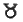
Taurus [Rebis] - arc - Arès, Mars, vitriol -
Arès, Mars, vitriol -  safran d'alun [chaux de la terre fixe de l'alun] -
safran d'alun [chaux de la terre fixe de l'alun] - 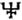
alkali fixe sublimé [Neptune] -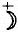
Lune mercurielle - Zeus - Cronos -  nigredo
[Soleil noir] - adversus-
luna
descrecens [in aurorae tempore] - Sol Ares
-
nigredo
[Soleil noir] - adversus-
luna
descrecens [in aurorae tempore] - Sol Ares
-  luna
veneris -
luna
veneris - 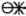
Sal Amon - stella cum cruce - ioV cristou [chaux mercurielle] -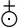
aurea stibi -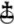
antimonium [antimimon] - vitri oleum - AZOTH [qeioV]
-
animus -
AZOTH [qeioV]
-
animus - 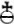
salniter -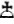
translatio [transfert] -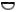
cogitare [projection] -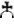
albatio - aes ustum -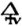
sulphur « azoqué » - se
projette alors dans le signe du Bélier et du Taureau qui
sont respectivement les lieux d'exaltation solaire et lunaire. Le
thème du songe est récurrent en alchimie : c'est
la passerelle utilisée par les interactions entre et comme le montre la planche
1
du ML.
Interactions permettant aux mythologèmes de s'exprimer dans
l'inconscient du héros. En l'occurrence, le sommeil de
Poliphile
est mis en rapport avec la date de la commémoration,
à
Cythère, de la mort d'Adonis [voir SP,
note p. 413]. Adonis,
rappelons-le, représente chez les hermétiste la
matière philosophique mise au tombeau : il s'agit donc de
l'animus qui doit,
dans un premier temps, se
dissoudre. Cette
dissolution va nécessairement de pair avec une
spiritualisation,
i.e. une sublimation. C'est ce qui est indiqué dans la
première partie de la Tabula smaragdina.
Ce
processus ne s'établit pas facilement comme l'indique
Poliphile
qui est tourmenté par l'insomnie au début de son
histoire
: Agrypnie [d'agrupnia,
veille]
est un terme où le cabaliste voit l'agrégation de
la
chasse [agrew,
prendre au filet]
et d'Hypnos [fils de la Nuit,
voir Philalèthe,
VI];
n'oublions pas qu'Hypnos peut figer Okéanos, fils d'Ouranos
et
de Gaïa : son cours, sans jamais dormir, il roule autour de la
Terre,
coulant vers sa source. Il s'agit là d'une figuration du
serpent
Ouroboros
des alchimistes. D'entrée
de jeu, nous voyons associés deux principes dont l'antinomie
n'est qu'apparente : prendre au filet pour l'alchimiste consiste
à savoir pratiquer la coagulation du volatil [voir D'Espagnet, Oeuvre Secret
d'Hermès];
figer le principe, l'archée de
est, au fond, la même opération qui se
réduit ici
à volatiliser le : les
hermétistes ont
voilé l'opération sous le masque de la cure
d'hydropisie [voir Atalanta
fugiens,
emblème
XLVIII
et Aurora
consurgens, fig. XIII].
Agrypnie, c'est pour
ainsi dire l'artifice assurant la maîtrise de la fixation et dont
nous verrons plus loin un écho avec la tête de Méduse.
Comme
nous l'avons dit, c'est néanmoins la dissolution et donc, le
sommeil, le songe, la rêverie, qui l'emportent dans un
premier
temps :]
dans le SOI
[animus
],
c'est-à-dire non pas tant une
évanescence de la conscience qu'un affermissement du pouvoir
sensible, une primauté de la raison sensible sur la raison
logique. Et n'est-ce pas en somme ainsi, que tout créateur
aperçoit d'abord son oeuvre, par ce
phénomène de
voyance, où l'imaginaire tisse sa toile dans le sensorium spirituale
de la
psyché ? Ce n'est donc que la partie liée au
logoV qui
s'obscurcit en une figure
d'éclipse; phénomène qui
s'apparente à la nigredo des
alchimistes. L'on ne
saurait pour autant en faire une fuite hors du réel et comme
Jung [voir
Lectori
Benevolo in Réponse
à Job, trad.
Buchet Chastel, 1964] l'a
montré, un
phénomène non tangible [transcendant]
est tout autant
réel qu'un fait, un objet, voire un dit : simplement, il
s'agit
d'objets métaphysiques qui relèvent de ce que les
philosophes nomment des « en soi » et qui
s'apparentent aux
objets mathématiques, lesquels selon que l'on est
platonicien ou
aristotélicien, peuvent être
considérés
comme relevant d'une sorte de « poétique du logos.
»
Si donc, le songe ou la rêverie détendent la
conscience,
c'est pour la rendre plus malléable aux influences
extérieures, à l'étranger, bref au ÇA
qui forme le trinitaire psychique, avec le MOI
et le SOI.
Le ÇA
étant par essence porteur de l'AUTRE,
nous sommes en plein dans notre sujet, à l'instar de
Poliphile
dans sa quête de Polia. C'est donc moins une pente qu'une
élévation qui se fait jour dans le processus de
sublimation spirituelle qui accompagne la rêverie. On peut
d'ailleurs faire en sorte de lier les sens et voir se profiler
ainsi l'échelle de Jacob [voir
planche
I du ML].
Voyons à présent Adonis; le retour du printemps,
en
avril, n'a d'équivalent que la tristesse du deuil et la joie
du
retour, organisé dans la fête des Adonies
où des
vases garnis de plantes semées hors saison,
forcées et
vite flétries, les jardinets
d'Adonis,
symbolisaient sa brève existence et
illustraient la vanité des plaisirs illusoires [sur Adonis, voir Aurora consurgens III
où
nous discutons des mythes de Cybèle, d'Attis et du
Christ-logos
ainsi que Ripley
Scrowle sur les
rapports entre Adonis et l'anthropos ou premier Adam].
Qu'ajouterons-nous
sur Adonis ? Qu'il est à l'égal de Bacchus chez
les Grecs
ou d'Osiris chez les Égyptiens. Et que les
Chrétiens le
vénèrent encore sous le nom de seigneur. Qu'il y
a eu
transfert de pouvoir et, pour ainsi dire, de mythologème,
dans
cette opération. Adonis est, dans notre histoire, comme le
double éthéré de Polia [polioV,
blanc,
brillant en parlant du ciel, de l'air
et
du printemps; mais aussi gris
comme le loup de Basile Valentin. Dans SP,
Notes
de la présentation,
p. xxxii, Polizzi fait remarquer la dérive qui s'est
établie : Poliphile a donné Polyphile (Rabelais,
Sorel,
La Fontaine) ce qui a fait dénaturer le sens premier de
wanderer, voir supra]
: il brille tel
notre . Macrobe [Saturnales,
trad. Henri Descamp et
al., in Oeuvres
de Macrobe,
Paris, Panckoucke, 1845, l. I, c. 21]
explique les aventures
d'Adonis et de par la marche du
dans le zodiaque et par ses rapports avec celle de la
végétation qui se reproduit aux deux
équinoxes,
c'est-à-dire aux lieux des noeuds terrestres [lorsque nous disons
que le
est dans tel signe du zodiaque, il faut bien sûr comprendre
que
nous le voyons de la Terre, , qui est
opposite : ainsi, en
avril, la Terre est-elle dans le signe - appartenant au zodiaque
tropical - du Scorpion]. La
cabale nous autorise à
considérer qu'il faut voir dans ces lieux de
schizogénie
l'équivalent des noeuds de la
[tête
et queue du dragon
dont nous parlerons plus tard]
où Proserpine et
Vénus se partagent l'existence du .
Macrobe attribue à la partie supérieure de
l'hémisphère, tandis que la partie
inférieure est
réservée à Proserpine [Persejonh].
On remarque le parallèle entre Proserpine et Nephtys d'une part [la déesse
égyptienne
Nephté, qui sert de parèdre à
Ammon-Ré, est
liée au Sagittaire; voir zodiaque
alchimique] et entre Isis et Vénus
d'autre part [on relève
le
paradoxe : Isis est l'épouse de Ré et ne
prépare
jamais que son ensevelissement, son démembrement ; le
contraire
a lieu pour Nephtys]. encore crud.
Le frontispice montre un blason où
trois choses sont à remarquer : les feuilles de
chêne, le
bélier et le casque. Le lecteur verra ailleurs ce que nous
écrivons là-dessus ; contentons-nous d'ajouter
que ces
feuilles nombreuses [polujulloV]
ont une
disposition particulière qui, d'accord avec un sens
caché
du mot casque [cassis mis pour
dégoutter avec le sens de fondre],
donne pratiquement le
nom vulgaire du Mercure des Sages. À la
différence du
langage
vulgaire, en alchimie, l'arbre ne cache pas la forêt. Elle
possède, par l'enveloppement qui lui est propre [fonction de protection, deljuV] et par
l'ombre
portée, un sens évident et il convient que
l'Artiste, dans sa quête, parvienne à l'arbre
sacré
au pied duquel il trouvera un trésor, que lui seul peut
arriver
à dénicher et qui n'attend que lui seul ; ainsi
va le
mystère de l'individuation. Ce trésor est
situé au
centre du labyrinthe représenté par la
forêt et son
idéogramme est [voir
infra pour une amplification sur Minos et
Thésée]. Il nous faut admettre que l'arbre
sacré n'a, virtuellement, aucune place
désignée
dans cette forêt ; il possède une valeur universelle que
tout
être
humain détient dans son anima et qu'à force de travail
et d'effort, il peut
arriver à faire sourdre de son animus afin
d'atteindre l'AUTRE
[le
ÇA] ainsi que
nous
l'avons dit ailleurs [voir Aurora consurgens
et Ripley
Scrowle].
Mais nous
parlerons de cet arbre sacré tout à l'heure. La
forêt, l'Artiste la gagne en descendant la pente de son
rêve, pour remployer l'expression de Bachelard :. La limite,
virtuellement mobile si
l'on admet une forme circulaire au mandala, vaut comme solution de
transfert et présente des relations avec . L'espace
compris entre le point et la limite est l'affrontement entre ces deux entités de la
psyché
et son idéogramme est un Mixte où participe la †
[voir
Aurora
consurgens, II].
Le champ d'action ainsi posé, il
est aisé de comprendre que dans la forêt s'expriment les affects les plus variés, oscillant de
l'émerveillement du à la peur de la nigredo . Selon la
place, selon le degré de
pénombre, le héros va donc errer dans la
forêt
jusqu'au trésor qui lui est
réservé,
c'est- à-dire jusqu'à l'endroit,
disposé sous un
arbre, où dans sa rêverie coïncideront la
et
le .
Ce lieu, marqué de
l'hiéroglyphe de l'ioV
,
stigmatise la conjonction du transfert et de la
projection et il est désigné en tant qu'arbre
philosophique [voir Aurora consurgens, I
et Jung, Les
Racines de la conscience].
Cette structure enveloppant le MOI,
véritablement prisonnier du
SOI
dans le processus du sommeil paradoxal, trouve sa
contrepartie, limitée, dans la
rêverie telle que la dépeint Bachelard qui fait
ressortir
le rêve de l'animus et la
rêverie, de
l'anima . Belle dichotomie que
voilà, en
vérité ! Et qui donne à voir
l'essentiel de ce qui
arrive dans cette partie, débutante, du SP :
l'inquiétude, la peur, voire la détresse du
héros
qui ne retrouve point sa route, qui ne parvient pas à mettre
ses
pieds dans un chemin orienté, tels sont les points de
liaison et
de friction que nous trouvons dans nos rêves : le trait
principal est qu'ils échappent entièrement au
pouvoir de
notre volonté, au lieu que la rêverie permet
d'errer en
quête d'une quiétude psychique. Le rêve
est porteur
d'inquiétude. Il est habité par Nyx : n'oublions
pas que
la Nuit est fille de Chaos et qu'elle est mère de
l'Éther
et
d'Héméra [lumière,
i.e. ignis ].
Nous trouvons ici deux paramètres qui
se rapportent au transfert et qui sont liés à
Cronos . Aussi bien
le symbolisme sous tendu par Nyx
s'exprime-t-il dans des territoires où nul n'a jamais
osé
s'aventurer. Car tel est le degré de liberté qui
s'exprime dans le rêve c'est-à-dire, pour parler
de sa
transcription graphique qui constitue aussi sa projection, dans le
mandala, qui en constitue non moins une translittération.
Mais,
nous dira-t-on, si le rêve est pure liberté,
d'où
vient que sa représentation virtuelle soit assujettie
à
un
ensemble clos et structuré comme peut l'être un
mandala ?
C'est que nous jouons là sur un facteur de
subtilité
où imaginaire et rêverie peuvent
(ap)paraître
superposés et/ou disjoints. Le temps du rêve nous
paraît effiloché, telle une étoffe dont
la
traîne aurait trouvé, de-ci de-là, un
point
d'ancrage [fixation]
qui
est aussi de blessure. On trouve un point de jonction
entre
le concept de mandala et le labyrinthe dont l'importance n'est plus
à souligner dans le symbolisme hermétique. Nous
avons
souvent rappelé dans ces pages des notes de Fulcanelli
relatives
au labyrinthe de Salomon, qui concernaient les trois
problèmes
cruciaux que l'Artiste aborde successivement au long de sa quête :
trouver
l'entrée du labyrinthe [équivalent
à l'Entrée
ouverte au palais fermé du Roi
du Philalèthe]
; parvenir à la chambre centrale [le poison ioV
où
trône un dragon, un serpent ou une chimère, ex. le
Minotaure]
; trouver le chemin de la
sortie. Remarquons encore que l'entrée correspond au
processus
de dissolution, de corruption et à la nigredo . Que le
centre du labyrinthe - mandala correspond
à [le lieu de
l'arbre philosophique].
Qu'enfin, la sortie est le processus de
réincrudation ou individuation [coagulation de l'aqua
permanens ou eau
mercurielle], assimilable
à l'anima consurgens
.
Le labyrinthe correspond donc au voyage
intérieur du MOI,
eng(l)obé ou
amalgamé au SOI,
lors du rêve. Le but de
ce voyage au tréfonds de l'inconscient n'est pas, quoiqu'on
en
ait dit, la connaissance du SOI,
chose impossible, mais
l'individuation dont le gage est la connaissance du ÇA
ou, si l'on préfère, de
l'altérité. C'est
donc le SOI
même qui forme la substance de
l'espace compris entre la limite et le centre du mandala, dans la
représentation que nous proposons ; le parcours, que l'on décrit comme « initiatique », est
cette
traversée qu'effectue notre MOI
dans les
méandres entrelacés et chiffonnés de
notre
inconscient qui se comporte alors à l'instar d'une
véritable « soupe » spirituelle. .
Nous n'insisterons pas beaucoup sur cette fontaine compte tenu de la
récurrence de ce symbole dans l'alchimie. Toutefois, en
liaison
avec ce que nous avons dit supra, touchant au temps et à
l'espace, la même réflexion vaut pour le fleuve et
la
fontaine. Le fleuve, le ruisseau sont équivalents au temps
qui
passe, à , tandis que
le lac ressortit de ou
plutôt de son frère, Neptune dont le
domicile est le signe des Poissons qui est aussi le lieu de
maîtrise nocturne de . Zeus
cède la place
dans cette symbolique de l'Éther où se place la
fontaine; endroit auquel il n'est pas possible d'assigner de sens,
d'orientation ce qui relève bien du caractère [autres
épithètes : fou, insaisissable, fuyant, etc.].
On
n'aura garde d'oublier, cependant, que la fontaine est
bornée et
que le héros y trouve un instant, l'objet d'une fixation,
d'un
repos, première apparition du sulphur dans ce
périple. Mais alors qu'il
s'apprête à étancher sa soif, le voici
subjugué par une harmonie venue de nulle part et qui se
révèle comme l'intrusion d'un nouvel
élément du rêve. Poliphile pense aux
sortilèges de Circé [voir
Atalanta
XLII mais on pense
aussi aux Hespérides sonores]
et à
l'herbe magique, la moly, qui avait permis à Ulysse [Od.
X, 305]
d'échapper au sort de ses compagnons, transformés
en
pourceaux : la moly [mwlu]
était une sorte
d'alexipharmacon ayant les couleurs symboliques de l'oeuvre alchimique.
Sa racine était noire et sa fleur, blanche comme le lait. Il
est
aisé de voir que la moly est superposable, par ses
propriétés organoleptiques, à l'arbre
philosophique. La racine est équivalente à la
période de nigredo et contracte
des rapports
avec la . Quant à la fleur, outre
qu'elle pointe vers le
,
elle sème aux vents le sulphur
disposé en son centre : c'est une
variation sur le thème du mandala. Mais alors que le mandala
est
plutôt considéré comme un objet
spirituel relevant
du domaine de l'imagination active [voir M.-L. von Franz, Alchimie et Imagination
active,
trad. la Fontaine de Pierre, 1982],
la figure naturelle de la
fleur de moly annonce par son mystère l'oeuvre
dorée
d'Hermès [voir Jung, commentaire sur le Mystère de la
Fleur d'Or, trad. Albin
Michel 1979] : qui
procure à Ulysse la
plante magique. Le son mélodieux que Poliphile entend est-il
produit par la lyre d'Orphée ou par la voix de quelque
sirène ? Les deux, alors, sont liés : sans
Orphée,
les
Argonautes n'auraient pu franchir l'obstacle...
Orphée et Sirènes, Bien et Mal : liés
et
opposés, complémentaires. Mais soudain un doute
surgit
dans notre esprit : et si ce chant mystérieux provenait des
limbes du SOI
de notre rêveur ? S'il provenait du
tréfonds de la psyché ? N'y aurait-il pas
là
quelque logique, quelqu'élément qui donnerait
sens
à ces paroles de Hegel : sont évidemment
présentes chez l'homme
de même que l'animus n'est pas
l'apanage de la
femme. Jung a donné là-dessus des pages
importantes
où la notion d'hermaphrodisme et d'androgynie rejoint l'objet
des vieux alchimistes. Cette
intussusception ne va pas sans problème et : tandis que
l'autre est
orienté du côté du .
L'animus dont l'hiéroglyphe est le Mercure
correspond à ce torrent de larmes ou reuma
que nous venons
d'évoquer. Quant au poison, il s'agit de l'ioV
ou
associé ici à la ruse [duperie],
épithète du Mercurius [aussi de
Méduse], et
à la corruption [séduction],
épithète du sulphur en son
premier état [voir figure 8
du RP].
Bachelard
parle de projections chiasmatiques dans la communion des
êtres
aimants et reprend des schèmes propres à Jung,
exprimés en particulier dans l'introduction au Yi-King
[Commentaire
sur le Mystère de la Fleur d'or,
préface reprise
et étendue dans la version française de Synchronicité
et Paracelsica,
trad. Albin Michel 1988].
Cet x
que Bachelard [Poétique
de la Rêverie, p. 64]
remploie d'une image de la Psychologie
du Transfert
[op.
cit., p. 81] illustre les
interactions entre l'Adepte
et la Soror.
Ces deux acteurs du couple alchimique trouvent leur contre partie, chez
Francesco Colonna, dans Poliphile et Polia. Cet X,
c'est encore l'inconnue
mystérieuse de l'équation dont parle Fulcanelli
dans les DM
[tome
II] : SXKOH
[voir
Atalanta
XLV]
de même qu'au dire de l'Adepte, l'aspect,
quadrillé à l'instar d'une galette des rois, de
la
surface du dissolvant secret dont la consistance est
feuilletée. Voilà une énigme bien
mystérieuse quand on sait que, selon Basile
Valentin, le dissolvant se
présente au début du
travail comme une « eau sèche.
»
Nous verrons dans le cours de notre commentaire que Polia agit
à
la façon d'un attracteur qui ne laisse pas d'être
étrange, ou d'un aimant, caractère où
l'on
retrouve l'un des attributs du . Dans le
même temps,
Poliphile présente les signes qui distinguent la «
substance grave
» ou prima
materia. Par exemple, il
descend, nous
l'avons dit, dans son rêve comme la matière
première qui part au tombeau, au creuset de la nigredo .
Arrivé au plus sombre, au plus profond de la
forêt, il trouve les éléments
mercuriels qui
annoncent la transformation : le lac et le ruisseau. Un chant soudain
le fascine, lui fait perdre le sens [épithète
du Mercurius]
sans qu'il ait trouvé le temps de se
désaltérer : : on la
voit souvent jaillir au
pied d'un Arbore vitae
sur lequel nous allons revenir.
contenant le sulphur
sublimé [dans
lequel il faut voir l'âme ouverte du métal, i.e. l'humide radical
métallique].
« La lune rouge au fond du
bois »
évoque l'état du Soufre blanc ou SEL
après qu'il a été teint par le
sulphur dans le
processus de projection [l'équivalent
de l'individuation
jungienne, voir Aurora consurgens
et Ripley
Scrowle]
tandis que le
fond du bois est en parallèle avec l'omphalos
évoqué supra,
analogue de la
porte ouverte sur le ciel [l'immanence
transcendantale : chacun la possède comme une ouverture de la
psyché vers un ailleurs. Le premier pas vers l'individuation
consiste à dénicher cette ouverture]. De cet
ombilic spirituel naît la
fontaine d'eau vive qui sourd au pied de l'arbre. Cette fontaine est
présente dans le symbolisme alchimique et Nicolas Flamel
l'a
dépeinte dans ses Figures
Hiéroglyphiques., la balance
est le symbole de la Prudence [ou
de la Sagesse de l'Aurora consurgens]
qui affiche
l'hiéroglyphe du serpent Ouroboros.
Dédiée
à la pesée des âmes, son rôle
hermétique lui confère de régir les
interactions {Mercurius <->
humide
radical }. En termes chimiques, on peut y voir
la
balance de masse présidant à
l'équilibre
dissolution -précipitation et complexation- adsorption [le Mercure peut en
effet être
assimilé à un sysème aquatique
où des
processus réactifs contrôlent la circulation du
compost].
Il s'agit là, on le voit bien, de processus de transfert qui
intéressent la première partie de la Grande
coction,
c'est-à-dire la dissolution. Si l'on considère le
zodiaque alchimique,
deux
axes peuvent être distingués : l'un où
le
coupe le plan de l'écliptique au point g [point vernal, début
traditionnel du grand
oeuvre à l'équinoxe
de
Printemps], point
correspondant à la tête de dragon [noeud ]
tandis que l'opposite [où
entre dans le signe de la Balance]
signale le début de
la coagulation de l'eau mercurielle, c'est- à-dire la
réapparition du sulphur
dépuré, premier
terme de la chaîne menant à la réincrudation
[individuation].
On peut trouver
la trace de ce processus dans un mythologème
évoqué par Jung [Gayomart,
le premier homme, figure analogue à Mithra, voir Aurora consurgens, III]
: est
exalté et où
est en chute. Tout ceci dénote la dissolution ou nigredo . Il y a
là une contradiction sur laquelle on
trouve peu de commentaires. Cette contradiction n'est qu'apparente et
l'on va en juger : le début du travail, en mars,
s'opère
alors que le a son
ingrès dans le
Bélier et que la se
projette dans la
Balance [inversement en
septembre
où la se projette
dans le Bélier.
Précisons que nous parlons ici du zodiaque tropical et non
pas
sidéral, eu égard à la
précession des
équinoxes].
À cela, il faut ajouter que
l'alchimiste quand il entend parler de la stibine oriente son discours
vers le . [voir Aurora consurgens, II
où
nous montrons que le transfert est lié à la
marche du
dans les stations zodiacales alors que la projection est
liée
à la ].
Quel est ce « principe
mauvais
» ? Il s'agit de l'ioV
ou humide radical des
métaux [équivalent
à un stade de proto anima, visible à la fig. 8
du RP].
Son importance est fondamentale puisqu'il fait l'objet [et il est le sujet]
du
transfert, soumis à . est un feu
aqueux ou une eau ignée [l'image
en est
l'hexagramme de Salomon ].
Notons que l'expression Gigas
geminae substantiae
provient de l'un des plus beaux hymnes ambrosiens, le Veni Redemptor gentium.
[voir
Divi
Ambrosii episcopi Mediolanensis omnia opera,
d'après une
édition de Paris de 1539, Gallica].
Nous verrons plus loin en quoi il est important de faire cette jonction
entre le Christ et le serpent, via le dragon.. Il entre
alors dans un régime
intermédiaire qui tient du gris [voir Pernety, Dictionnaire
Mytho-hermétique],
sous la dépendance de Jupiter capitolin.
C'est un régime où la lueur
alterne avec la pénombre et auquel on peut attribuer
l'idéogramme ; on se
situe au terminateur de
l'ombre, à cet endroit spirituel taillé en
biseau, dont
la courbure forme les limbes du MOI.
Et ce palmier de
victoire répond aux ruines baignées de
lumière,
ruines où l'on peut voir comme un écho du
héros
solaire Héraclès [par
extension Thésée, cf. infra].
Selon certaines
légendes d'Asie,
le palmier et le premier Adam [voir
Ripley
Scrowle]
auraient
été façonnés du
même limon. À
cela,
ajoutons que le palmier est lié au dattier; [voir Basile
Valentin, Douze
Clefs,
Clef
I].
On
peut admettre dans cette scène comme une sorte de
découplage où deux éléments
de la
psyché - normalement confinés - sont soudainement
séparés en anima [Poliphile]
et animus [le loup].
Ce
découplage illustre l'aspect numineux que prend alors le
rêve du héros : en sortant de la forêt
profonde et
porteuse d'anxiété, Poliphile [le MOI]
se libère
tout-à-coup de la chape de plomb qui semblait
s'être
abattue sur ses épaules, autrement dit de l'encerclement
dans
lequel il est contraint par le SOI.
Pour expliquer le
sortilège que nous in(é)voquons ici, par analogie, on
peut
citer le
dispositif de la chambre à brouillard [Wilson, 1912]
qui permet, si
l'on ose dire, de rendre l'occulte manifeste, au sens où le
dispositif permet, par sursaturation, de rendre compte indirectement
du trajet [et donc de la nature]
d'une particule ou de la présence d'une particule. Eh bien !
le
terminateur de la forêt, dans le SP,
est à l'image de
la
sursaturation qu'on obtient, dans une chambre de Wilson, par expansion
adiabatique : la photographie de la chambre permet alors de visualiser
son contenu. Il agit comme un révélateur.
Ainsi
peut-on considérer, dans cette gravure du SP, aussi bien le
couple {Poliphile - loup}
que le couple {anima -
animus} ou encore que la
dualité {Bien -
Mal}.
Déjà, vers 1916, Jung considérait dans
les Septem Sermones ad mortuos
[voir
la Vie
symbolique, trad. Albin
Michel,
1989, sermons I et II]
que le Bien et le Mal forment une
sorte de structure bipolaire dont il était vain, sinon
impossible,
d'isoler l'une des composantes sans courir le risque de
détruire
l'ensemble et de perdre de vue, littéralement, la partie
étudiée. Dans les Septem
Sermones ad mortuos,
Jung se livre à une
variation sur l'évhémérisme puisqu'il
attribue
à une essence suprême, nommée Abraxas,
une
domination sur Dieu et le Diable. Dieu qui prend Helios
en tant que logos
- anima tandis que le Diable est
intégré à l'ombre : on devine que
celle-ci
ressortit de Séléné
[et
de l'animus ].
Abraxas représente le Grand Tout, l'En To Pan
de la Chrysopée
de
Cléopâtre, le Sensorium
dei
de Newton. Il joue le rôle de l'Arch
élémentaire et, dans la distribution de la
psyché,
du ÇA.
Les alchimistes le nomment AZOTH [voir
Libavius]
et il figure, comme mythologème, la divinité
gnostique
où se trouve constellée la trace du Mercure
philosophique. On le trouve en forme d'intailles avec la tête
d'un coq et les pieds formés de deux serpents : cette image
nous
est familière puisque l'on retrouve le signe des
Gémeaux
de notre zodiaque
alchimique ou
encore cette figure
hiéroglyphique
du Livre
d'Abraham Juif.
On le représente muni d'un
bouclier et d'un fouet [fonctions
antithétiques de protection et de menace].. Mais la
vision est fugitive à l'instar du
Mercurius et le loup
retourne dans la
forêt. Si nous résumons cette scène
capitale pour
la compréhension phénoménologique de
la
quête de Poliphile, plusieurs points peuvent être
énoncés :. Poliphile,
dans son rêve, s'y
enfonce avec un effet de dissolution ; il est semblable à
ces
chercheurs aveugles que les alchimistes représentent les
yeux
bandés dans leurs gravures [voir
Michelspacher, Cabala speculum artis
et naturae, 1616 : conjunction]
; toutefois, à la différence des
impétrants, il
n'a pas de guide [lepus, lupus,
Diane, Ariadne, etc., cf. infra pour Ariadne]
; et [i.e.
entre fixe et volatil] ;, voir Aurora consurgens, II].
Il
est marqué par le découplage {animus - anima}.
L'anima
est alors, d'une certaine mesure seulement,
libéré. Ce
dont témoigne l'irruption fugace du loup gris [animus] qui figure le
thème de la destruction [voir
Atalanta
XXIV]. : ils sont
formulés dans l'axiome central de
l'hermétisme : SOLVE ET
COAGULA et illustrés par l'Ouroboros.
On ne dira jamais assez que toute l'alchimie [à commencer
par l'enseignement
gnostique de la Tabula smaragdina]
est
contenue dans cette formule. Au moment où Poliphile sort de
la
forêt, le illumine la scène, tel LukeioV
[le
lumineux, épithète
d'Apollon]. Or le loup est,
comme le lion, consacré au
et à Apollon. tenant du sulphur puisqu'il
représente l'incendie cosmique par
lequel les choses sont périodiquement consumées :
voilà qui nous ramène encore au serpent Ouroboros et au
Mercure
des alchimistes dans la mesure où Sérapis bien
qu'immortel, ne cesse de mourir et de renaître [par assimilation au
dieu Osorapis, par
combinaison des cultes voués à Osiris et au
taureau Apis].
Par son identification à Sérapis, il est
rapproché
de Dionysos, dont les mystères
célèbrent la mort
et le renouvellement. Sérapis est aussi un dieu
guérisseur, comparable à Asklépios. Il
guérit les hommes en leur envoyant des songes
interprétés par les prêtres.
Sérapis
est représenté assis sur un
trône, avec
à son côté le tricéphale du
royaume
d'Hadès, Cerbère [voir
Douze travaux d'Hercule in Fontenay].
Son attribut le plus caractéristique est sa coiffure [calathos]
en forme de corbeille
décorée de rameaux d'olivier ou d'épis
de
blé. , ce qui vaut aussi pour le lion
sacré
que Dupuis évoque dans son Origine de tous les cultes.
Sa présence dans l'abraxas témoigne du triomphe
de
l'anima sur l'animus, c'est-à-dire de la victoire de la
lumière sur l'ombre. Autrement dit, pour l'alchimiste, de la
réincrudation
du sulphur et in fine,
pour le psychanalyste, de l'individuation. La partie centrale de
l'abraxas est faite d'un torse guerrier couvert d'une armure : c'est le
thème du combat entre le Bien et le Mal et la
présence du
fouet, mis en dextre, n'est pas hasardée : le fouet [mastix]
combine les symboles de la Force et de la Justice [voir Gardes
du corps et Gobineau]
et on le
voit représenté, de manière semblable,
au bras
droit levé en équerre de Min. Min, dieu des
moissons et
de la fertilité [dont on
trouve en Grèce l'équivalent en Ploutos].
Min que
Pharaon révérait au mois de mars, à
l'époque où les alchimistes
préconisent, lors de
l'ingrès dans le Bélier, de
débuter
l'oeuvre. Pharaon peut, dans cette opération, être
assimilé à Apollon puisqu'il est
qualifié de
« brillant dans le soleil
levant
» [josjoroV].
Le cortège
comportait un taureau blanc portant entre ses cornes le disque solaire
: il représentait l'incarnation terrestre du dieu ou Min Kamoutef
[le
taureau de sa mère ou Isis,
la terre
hermétique - SEL - que l'on désigne encore comme
Cérès]
où l'on peut voir la projection de
l'anima [i.e. du sulphur des
alchimistes]. Ajoutons que
Min est
représenté avec un visage noir, signe de la
nigredo pour les
disciples d'Hermès dont le sens,
toutefois, ne saurait être dévié de la
vérité historique par des
considérations
subalternes. Ici, nous pouvons laisser voguer notre imagination et voir
Min dans le Naos [la salle du
mystère absolu, c'est-à-dire le vase de nature ou
V.I.T.R.I.O.L. des alchimistes],
interrogé par les
prophètes [serviteurs
divins] : n'est-ce pas
là le rêve, la
manifestation immanente du SOI
? La confrontation avec
le Naos est-elle sans rapport avec le repos de Poliphile au pied du
chêne magique ? En ce lieu, l'alchimie a cours de toute
éternité et se résume en une formule :
Imago Dei.
Revenons
à Poliphile. Une autre version existe de la gravure
où on
le voit représenté avec le loup.
aux régions supérieures est
annoncé par le lever héliaque du Centaure et du Loup.
Ces
deux constellations sont situées au bord oriental lorsque le
est
dans le Bélier et qu'il approche du Taureau, lieu
d'exaltation . C'est donc le lever du Loup qui
indique le retour du printemps, c'est-à-dire pour
l'alchimiste,
la fin de la période de nigredo . La
scène est ainsi superposable à celle
de la résurrection d'Osiris selon ce que donne à
entendre
Dupuis :. Jung a
montré que l'opération passe par
des interactions entre le Père et le Fils:]
le dispute à la force de l'acier [anima = adamas ]. ; rappelons que Phèdre,
désespérée de la mort d'Hippolyte,
s'était
pendue à cet arbrisseau [sur
ce mythe, voir Jung, Métamorphoses
de l'Âme et ses symboles,
trad. Georg, Pochothèque,
p. 497]. Phèdre [Jaidra],
c'est encore par
cabale le lumineux, le pur [jaidroV]
qui se rapporte
peut-être davantage à la
qu'au dans notre contexte. Le myrte n'est
pas sans rapport
avec la cohobation puisqu'on le voit associé en Provence
à des fêtes données « en
signe d'espérance et de renouveau ».
Ce
n'est pas tout : le myrte
désigne encore la semence d'Hercule dans Dioscoride [IV, 144].
La lentisque [gomme-résine
se rapprochant du
pistachier] aurait des
vertus aphrodisiaques. mais bien
plutôt sur le moyen d'en sortir, chose
ardue à ce que l'on peut juger par l'ennui
qu'évoque
Philalèthe [rapportant par
là l'avis de plusieurs philosophes, voir supra].
Moyen sûr de fortifier la vue, voilà qui aurait pu
aider
maints impétrants, à commencer par celui que l'on
voit
suivre dame Nature dans l'emblème
XLII
de l'Atalanta
fugiens.
C'est au point qu'on en parle comme d'un
« casse-lunettes »; après tout, il n'est
point
impossible que la lanterne que tient l'apprenti Adepte dans
l'emblème soit - en tant que joiboV
- jaidroV
- un symbole de
cette veine. Le symbolisme de la centaurée
ressortit in fine
de l'imprégnation qui n'est pas
éloignée
de la fécondation : c'est le premier pas vers la réincrudation
[individuation].
et les Anciens la
désignaient encore comme sang
de Mercure ou larmes de Junon. On ne s'est pas aperçu que
ces
deux expressions sont identiques. Le sang de Mercure désigne
par
cabale la sandaraque [sandarakh
ou zandarith
d'Artephius]
qui n'est autre
que de l'arsenic rouge où l'on devine notre sulphur pris en
solution. Quant aux larmes de Junon, ne
peut-on pas y voir le Typhon - Python poursuivant d'une haine
implacable Latone ? Il y a là des indices qui permettent de
deviner dans la verveine une parabole sur le sort du spiritus abscondus
disposé à la fig. 8
du RP.
Le thème de la
purification est associé, ici, à celui de la
cohobation
dans une opération fondamentale : la depuratio
du sulphur en sorte
d'obtenir, par extraction et maturation,
l'anima [voir la porte alchimique
de Metz]. . Elle a la
réputation de procurer une
longévité exceptionnelle ce qui la rapproche des
qualités reconnues au Mercure ou aqua permanens.
Il y a plus
: elle préserve des maladies et assure la longam vitam
[voir
Paracelse, De
vita longa,
Bâle, ca. 1562 ]
sauf dans une circonstance particulière, sa
première
floraison ; il n'est pas difficile d'y deviner l'action
première
du Mercurius qui est de
dissolution et de
mortification [nigredo ].
L'une des légendes qui se rattachent
à la joubarbe sert de près la
symbolique
alchimique : autrefois, quand les marins bretons partaient pour
Terre-Neuve, ils suspendaient un brin de joubarbe au plafond : si la
plante se desséchait, on pouvait craindre un naufrage... Ne
peut-on évoquer le voyage des Argonautes et le danger bien
connu
des Adeptes, qu'il y a de « brûler les
fleurs
» en forçant trop le calorique ? L'allusion
même
à Terre-Neuve ne peut-elle pas trouver une
résonance
singulière si on la rapproche de la pierre cubique des
hermétistes, de celle surtout que l'on observe à
la
fontaine du Vert-Bois ?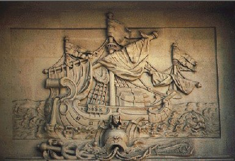
[la
fougère impériale est encore appelée
fougère à l'aigle car sa racine offre l'image de
l'aigle
à deux têtes de l'Empire austro-hongrois].
Les
alchimistes se sont aussi servis de la fougère pour
évoquer l'aspect qu'adopte parfois le dissolvant dans
l'opération du régule d'antimoine
étoilé [voir Philalèthe,
V]
; opération voilée par la parabole du Lion
vert qui « grimpe » au-dessus du composé
[voir
compendium].
Cet aspect en fougère [pteriV, polupodion]
rappelle
encore un fouillis de plumes ou encore des ailes, expliquant par
là cette analogie entre l'oiseau de proie et le polypode.
Analogie renforcée si l'on tient compte que la
fougère,
à l'instar de la salicornia
ou de la vigne, fournit
d'abondance
le sel alkali dont l'Artiste a besoin
pour préparer son . : le dragon
et l'aigle ne
sont jamais très éloignés dans le
bestiaire
hermétique. Ce n'est pas tout : une
variété de
fougère [asplhnoV]
était
réputée pour ses effets sur les maladies de la
rate. Or,
la rate en Chine est considérée comme un
dépositoire du YIN,
d'essence féminine et mercurielle ; ce n'est pas un hasard
si
cette énergie du YIN
est localisée à l'équinoxe de
printemps,
époque du début de l'oeuvre [voir supra]
où la couleur verte prédomine [cf. infra
constellation du Triangle]. L'analogie se
précise quand on remarque que la scolopendre est
désignée par Colonna de l'expression «
langue de
cerf »; le cerf désigne l'animal mercuriel par
excellence
et s'oppose à la licorne dont une belle image peut
être
vue sur le De Lapide
Philosophorum
de Lambsprinck [tertia figura,
p. 347 du Musaeum
Hermeticum,
1678]. Rappelons que le
cerf, par ses bois, est comparé
à l'arbre de vie [voir Aurora consurgens I]
et
qu'à ce titre, la langue qui désigne le feu , complète le symbole et en
constitue comme
l'offertoire au sulphur [principe YANG].
. Cette
écorce entre dans la composition du vin
des alchimistes dont une seule goutte donne au corps du lapis,
c'est-à-dire au SEL
la
couleur aurifique. Il est alors
métamorphosé en pur Soufre rouge ce qui peut
faire
comprendre la raison pour laquelle on lui consacre l'arbre lunaire. des symboles que nous
évoquons. On pourra faire d'utiles rapprochements avec
Daphné [laurier, voir Atalanta IX,
Typus
Mundi],
autre occurrence de casia [kasia,
pour fausse
cannelle ou séné]
: le laurier est l'arbre
préféré d'Apollon,
épithète de notre
sulphur . On assure
que la
contient un laurier et que c'est au pied d'un laurier que le
lièvre de la lune broie les simples. À ce sujet,
on sait
que le lièvre joue un rôle non
négligeable dans la
symbolique alchimique : il circule la nuit et s'avère aussi
fugitif et insaisissable que le . Ne dit-on
pas quand la
lune se lève, que « le lièvre de
jade monte
» [Cheng - e, la
déesse de la lune]
? Il semble que le
lièvre soit lié au thème de la
sublimation car la
légende veut qu'il ne supporte pas le croassement du corbeau
[associé
à la nigredo ].
Dans ces conditions, cela pourrait pourrait
expliquer que par cabale, le lièvre [lagwoV]
soit associé à la cavité ou au creux [lagwn]
d'où se tire la prima materia
en son gîte
minier [voir infra
pour la caverne et :
la
Force dans nos Gardes
du Corps ainsi qu'Aurora consurgens,
fig.
XXII].
D'une certaine
façon, le loup [lupus]
s'avère représenter l'ombre du lièvre [lepus]
en tant qu'il est
lié à la dissolution, mais nous avons vu supra
que le loup n'a pas que cette action destructrice que la
légende
lui connaît : c'est avant tout un psychopompe, une sorte de
christophore [voir Offerus in tarot alchimique].
En somme,
dans le
symbole de l'anima consurgens ou
Terre-Mère, l'idéogramme doit
être décomposé en deux parties
complémentaires : la †
[dissolution]
associée au loup ; le cercle soli-lunaire [sublimation -
résurgence]
associé au lièvre. est-il
poursuivi tout naturellement par le chien
envisagé comme psychopompe : on lui associe la triade - -
qui le rapproche d'Hécate, ce qui est une
indication sur le
thème de la fertilité [le symbolisme d'Hécate est
toutefois plus complexe]. Le loup se fait chien au
cours du
mouvement diurne [primum mobile
de Placidus] si l'on suit
les apparences... Nous tenons
là l'explication de la transformation du loup qui, d'abord
aveugle [destructeur]
devient clairvoyant [générateur].
C'est là chose bien banale : qui, aimant les chiens, ne sait
pas
immédiatement que l'animal l'adoptera selon qu'il
pèsera
sa part inconsciente [le SOI]
à l'aune de son instinct, toujours infaillible ? Le chien
n'est
qu'animus ;
dès lors, il lui est facile
de sonder - stricto sensu - le coeur de votre anima au sens où il est tout SOI
avant d'avoir trouvé son maître qui lui accordera,
s'il
est bon, une part de son MOI
[anima].
Mais cela ira sans
corruption parce que l'étincelle de feu ainsi
allumée
dans la psyché du chien sera enclose dans son animus
à la
façon d'un fer rougi : les initiales constellées
du Pneuma
de son maître
seront incrustées dans son animus. En signe de
mémoire
perpétuelle et d'amour vigilant,
marqué autant du sceau de l'urgence
que de celui de l'inquiétude. Le genévrier [arkeuqoV]
est en proche assonance de l'ours [arktoV].
Rappelons que
l'ours est très présent dans la symbolique
hermétique [voir Aurora consurgens, II].
Il
s'agit là encore d'un animal consacré
à la
et associé au principe YIN.
On l'oppose habituellement au lièvre sans pour autant le
rapprocher immédiatement du loup : cet aspect carnassier du
loup
échappe en effet à l'ours dont la force s'exerce
au plan
spirituel et ressortit davantage de la sublimation que de la
dissolution, quand bien même on en fait un des
archétypes
thériomorphes des ténèbres et de la
caverne [V.I.T.R.I.O.L.,
cf. infra].
En
somme, l'ours peut être métamorphosé,
ce qu'en
termes alchimiques on peut traduire par la transition du principe YIN au
YANG,
côté du
sulphur et face
solaire .
Cette métamorphose trouve sa correspondance mythologique
dans la
légende de la Grande
Ourse ou
Chariot. Nous y reviendrons
plus
tard. Ajoutons que les Égyptiens l'appelaient chien de
Typhon,
élément à ajouter au
caractère ambivalent
de l'ours qui se fait ici le guide de la destruction
incarnée.
Chose que l'on retrouve dans les constellations, puisqu'Ursa Major
est à
côté de Draco.
À la poursuite du point central, Polaris [a
Ursa Minor],
Ursa Major,
Draco,
Cepheus
et Camelopardalis
sont
engagés dans un incessant carrousel.
et cela au mode archétypal, tel que Jung devait le
révéler bien plus tard. Que
Charles-François
Dupuis ait été franc-maçon n'a pas
à entrer
en ligne de compte dans nos réflexions ; il nous importe
seulement
de faire voir que la Religion
universelle
[1794]
s'inscrit comme une
oeuvre phare au siècle des lumières en ce que les
mythologèmes y sont réduits en leur « humide
radical métallique
» si l'on nous entend
bien, c'est-à-dire en des projections constellées
issues
d'éléments inconscients,
idéalisés par la
psyché en figures de Rorschach [il n'est pas dans nos
vues de livrer
une exégèse sur ce test des taches d'encre,
justement
controversé pour les résultats biaisés
qu'on en
tire. En revanche, il nous paraît des plus utiles
à
considérer pour le codage
d'éléments esthétisants où
les taches - en
tant que clusters psychiques - servent de médium entre le
MOI - logoV
et le SOI - nouV].
Envisagées dans cette optique, il ne fait pas de doute que
les
quatre constellations que nous venons d'évoquer sont
à
l'image de points cardinaux où s'oriente la †
de la
dissolution alchimique, cerclant le point fixe du pôle,
l'étoile a
d'Ursa Minor.
Par humide
radical, nous entendons
que les mythologèmes trouvent leur fondement
en un arch
élémentaire, primitif, sauvage, semblable en
cela
à la prima
materia
vouée à la corruption [ioV].
Ce fonds ancestral ne
peut trouver d'autre origine que dans l'univers des quatre
Eléments. Dans le cas des constellations circumpolaires, il
semble que l'on puisse dégager comme des
éléments
d'un Tétramorphe
gnostique [voir
tarot
alchimique et Hôtel
Lallemant à
Bourges]. Draco
est lié à l'EAU
[aqua
permanens], Ursus
major
à la TERRE
,
Camelopardalis
à l'AIR
. Cepheus
est lié
à Céphée qui, après sa
mort, fut
placé parmi les astres. Pour l'alchimiste, Cepheus
participe donc de
cet humide radical qui s'exprime dans le monde firmamental des
étoiles et est à rattacher au FEU
.
Du reste, son lever, le soir, semble redoubler les
ardeurs de la canicule, près de la saint-Jean, avec annonce
de
tempête : de là les noms de flammiger,
inflammatus,
incensus,
pyrracheus,
dominus solis
qui lui sont
donnés.
Les Grecs le nomment encore le vieux marin ou Nereus.
Cette
dernière acception le désigne comme l'analogue du
Mercurius senex
de Jung ;
on le représente encore sous les traits d'un homme au visage
enflammé.
dans le Sagittaire [voir zodiaque alchimique].
Mais
nous sommes ici loin de la réincrudation
: ce que nous voyons est en effet la prima
materia
décavée, dans son état le plus vil, le
plus grossier et élémentaire. La psychologie y
voit la
marque quasi insondable de l'Inconscient, c'est-à-dire du SOI.
. C'est
lui qui, à l'instar de la Force
du
tombeau des Carmes, fait surgir la lumière de
l'obscurité. Cette lumière, comme nous
l'enseignent les
vieux traités, est marquée par des irisations,
des
couleurs qui ressemblent à celles de la queue de paon. Ces
couleurs, nous les voyons dans les minéraux cités
par
Poliphile. Le porphyre [porjurithV]
était
considéré comme une sorte de marbre
coloré en
pourpre [couleur qui annonce
pour
l'hermétiste l'imminence de la réincrudation et
qu'il ne
faut pas confondre avec le violet ion
qui ressortit de
la conjonction et de la corruption - ioV].
Le
baptême purpurin correspond à
l'imprégnation du SEL
par le sulphur
dépuré, lorsque l'aqua permanens s'est
retirée, après que les ardeurs de Typhon se
soient
apaisées et que les bouillonnements de la tempête [porjurw]
mercurielle aient pris fin. L'alchimie concerne aussi bien l'art du
teinturier en pourpre que celui du potier ou encore du verrier : vient
à se dissiper. Nous reviendrons
là-dessus bientôt parce que ce
phénomène
peut expliquer par l'analogie cet aspect en degrés que
présente la pyramide. Quoi qu'il en soit, le terme
générique pour le porphyre est le mot marmor
où
l'idée du brillant et de blancheur domine. Cette notion est
fondamentale à considérer.
dépuré prêt à être
réincrudé. Verdeur printanière et
pluie.
Voilà qui signalerait plutôt des topoi
se
référant à la sublimation ; il n'en
est rien.
C'est de pluie d'or qu'il est question et le jaspe symbolise ici la
mondification de la terra
alba foliata,
c'est-à-dire du SEL
.
Aussi bien connait-on une variété de
jaspe appelée héliotrope ou jaspe sanguin dont le
rapport
au sulphur des
alchimistes est évident.
Il s'agit d'une calcédoine verte, teintée de
rouge, qui
selon la légende serait issue du sang de la †.
Consacré à saint Pierre, le jaspe sanguin est
encore
désigné comme la pierre des martyrs; faut-il s'en
étonner ? Fulcanelli, dans les Demeures philosophales
[tome
I] rappelle que saint
Pierre fut crucifié la tête en bas. Indication sur
le
couple complémentaire dont
l'artifice de transformation passe par
l'idéogramme désignant la corruption ou
rouille [voir Aurora consurgens, II].
hermétique si l'on nous entend bien. La
serpentine, au reste, considérée comme roche,
offre un
grand intérêt par les
phénomènes qui se
rattachent à sa formation, où l'on peut
réellement
voir une sorte d'eau à la fois
ignée et secondairement
pétrée , qui se serait insinuée
entre des formations
d'origine neptunienne, dont la stratification a
été
dérangée à son approche. La serpentine
s'y est
infiltrée : elle est à l'origine des beaux
marbres de
calcaire, en Toscane. On y trouve des éléments
typiques
du Mercure
des vieux philosophes. Qu'on
en juge : la serpentine a fendillé le calcaire à
son
approche, s'est introduite dans ses fissures et a donné lieu
à un être minéral
métamorphique, sorte de
pâte mélée à des noyaux
calcaires ; ceux-ci,
de compacts qu'ils étaient, sont devenus cristallins. Si des
bornes n'étaient imposées à la raison,
nous
pourrions voir là une métamorphose par
épigénie qui se rapprocherait
singulièrement d'un
mécanisme d'individuation. La serpentine joue le
rôle de
projection dans cette opération et elle doit être
rapprochée de auquel la
rattache le sel qui en
forme l'essentiel : ammoV.
N'oublions pas que le sel harmoniac
des Sages
permet d'opérer la
fixation du sulphur : c'est dans
ce bain ou fontaine de
jouvence que se joue la réincrudation.
L'allégorie de la
rémore et de la salamandre [voir
nos symboles]
est d'habitude
associée à cette époque de l'oeuvre.
On trouve
encore celle du dauphin [voir Mutus Liber,
planche
III]
par lequel se signale le début de la
coagulation de l'aqua permanens
; occasionet à la ].
Il y a plus : nous avons maintes fois notés que la
réincrudation n'est autre que l'incorporation de l'anima , ce qu'en termes chimiques vulgaires,
on peut traduire
par la projection en masse d'une trace d'oxyde
dans une matrice silicato-alumineuse
appropriée. Si nous retournons au sable, il
nous faut donc chercher un médium capable de vivre dans le
sable, d'y tenir résidence. Nous trouverons du
même coup
le nom vulgaire de notre sulphur. Or, en grec, sidh
désigne une
plante aquatique vivant dans le sable, sorte de nénuphar
blanc [sidh en
proche
rapport phonétique de sidhroV,
source de l'ioV
,
et homonyme de sidh,
la grenade qui
désigne expressément par cabale le Soufre rouge].
Nous reviendrons plus tard sur le nénuphar [numjaia]
qui a valeur d'attraction et de pôle. - aes par cabale, notre airain],
à une échelle [voir
l'échelle de Jacob, cf. planche I
du ML]
et à une métamorphose de l'esprit royal en faucon
[thème
de la sublimation],
oiseau dédié à Horus.
et la terre : c'est la tour de Babel de notre
Inconscient, notre ziggourat spirituelle. À la différence
de l'E-temen-an-ki
[la mention d'E-temen-an-ki et d'Esagil, le sanctuaire du dieu
Mardouk, est faite pour la première fois au XIIe
siècle av. J.-C.],
qui avait sept étages [correspondant
aux sept planètes], la ziggourat de Poliphile est
disposée sur de nombreux niveaux qui témoignent du
processus de sublimation, fondé sur la réitération
d'un artifice sur lequel les Adeptes restent muets dans les textes,
seul capable de pourvoir à la conjonction des principes, au
sommet des montagnes, là où le ciel est d'une couleur de
violette [ion].
Réitération qui n'est pas sans rapport avec la
cohobation, consistant à obtenir une concentration, une
purification supérieure, à chaque opération. C'est
là que gît le corps caché dont parle Hermès
dans le Tractatus aureus.
La ziggourat, dont les fondements sont ancrés dans Apsû [les Eaux douces sur lesquelles flotte
la terre] et dont le templum,
recouvert de lapis-lazuli [voir
réincrudation et Soufre],
se confond avec le ciel, représente une échelle ayant
quelque rapport avec celle de Jacob [voir ML]. D'ailleurs, les
mille quatre cent dix marches de la pyramide de Poliphile font penser
à l'escalier monumental qui ornait la tour de Babel ou la
ziggourat de Babylone qui lui est congénaire. ]. Dans cette tentative de puissance totale, de
domination absolue, on ne peut qu'entrevoir l'inflation du MOI
où [par quoi] le
démiurge se révèle. Toutefois, ici, nous sommes
dans le rêve du héros [qui, ne l'oublions pas, rêve dans
son rêve] ; dès lors, nous pouvons supputer que la
pyramide - ziggourat constitue la représentation symbolique du MOI
visant à se libérer de l'emprise du SOI
qui, en principe, correspond au premier niveau du monument ou Cronos . En tant qu'E-temen-an-ki, c'est une
variation sur le thème de l'axe ou surtout de l'arbre reliant la
terre au ciel. Mais, alors que l'arbre
sous lequel Poliphile s'endort dans son rêve avait valeur
d'omphalos [voir blasons alchimiques] et
présentait les traits de l'esprit de la Mère [la forêt
obscure], la pyramide correspond à l'ombre, ou si
l'on préfère, à l'inverse du centre du monde [SEL = , forme substantielle du soufre solaire ].
Si donc, il ne s'agit point du centre spirituel ou microcosme [moyeu immobile de la roue ou Ixion est
condamné à tourner], c'est que cette pyramide est
tendue vers le cosmos, comme en un geste de procréation. Aussi,
tout de même qu'une ziggourat, peut-on voir aussi les traits
d'une linga dans le monument de Poliphile.
D'origine phallique, ce
symbole sacré n'a pas de connotation sexuelle ; il
représente l'essence de Çiva et l'essence de la
royauté. C'est l'objet sacré par excellence, le symbole
du Dieu-Roi. Et c'est là que les opposés se rejoignent :
le roi est habité par l'anima dont le sulphur est un stade primitif et grossier, immur. Dieu n'est
qu'animus dont le Mercure des alchimistes est une sorte d'hypostase
[ce terme doit être entendu
comme dérivé de son sens primitif : attribut de Dieu.
Nous l'employons comme l'inverse
du terme numineux, par quoi l'esprit parvient à la
transcendance, c'est-à-dire abandonne sa forme. Il faut donc
comprendre par hypostase la projection du principe divin, par essence
inconnu, dans une forme matérielle ou spiritualisée].
Si
nous revoyons la forme du linga, nous retrouvons les trois
éléments du monument de Poliphile. s'efforce de rejoindre le spiritus abscondus divin
dont le Mercurius est la représentation
alchimique. Le résultat en est l'aurore spirituelle
envisagée comme anima
consurgens [cf. Aurora
consurgens, I], processus que Jung nomme individuation. La
pyramide représente cet escalier de la reconnaissance du SOI
jusqu'à l'obélisque qui est un rayon solaire
pétré. La disjonction entre SOI et MOI
s'opère à la pierre carrée et aux harpies [cf. infra]
; la fonction de relation est établie par le moyen de la figure
du Christ et de la croix †.
L'iconographie alchimique possède sa propre pyramide à
degrés, qui est à l'albedo, opération
qui fait, d'une certaine manière, le sujet de l'Urfaust (1772-1775) de
Goethe, jusqu'à l'apparition de l'esprit de la Terre où
le miroir est franchi [voir
Chevreul critique de Cambriel].
L'objet en est, à cette époque du mouvement Sturm und Drang [Tempête et Élan, ca. 1770
- 1786], la sensibilité envisagée comme
perception
illimitée du monde, où se décèle le signe
du réveil du MOI prenant conscience de l'emprise
du SOI. C'est donc comme un « récepte
» de type mercuriel, à la fois chthonien et
céleste, qu'il faut voir la caverne. Lieu de désolation
qui donne l'image de l'ombre évoluant dans la dissolution et le
morcellement, la caverne possède cependant un pouvoir de
maturation et de fermentation qui l'apparente à l'oeuf et
à l'athanor des Sages. Nous avons maintes fois
évoqué l'oeuf de Pâques [cf. Fontenay]
pour qu'il nous soit permis de passer outre. Nous ajouterons pourtant
que cet oeuf était autrefois représenté comme un
serpent [le Naas hébreux
évoqué par Jung, notamment dans Psychologie et Alchimie] et
que dans d'autres légendes, notamment celle du Kalevala, l'oeuf
donne naissance à la Terre et au Ciel, à l'instar de ce
que nous verrons du mythe babylonien d'Apsû
et de Tiamat. Cette forme d'oeuf se retrouve
encore dans la spirale [cf.
infra, section dorée] et dans le
signe du Yin et
du Yang,
exprimant à merveille le double aspect est présentée dans
la part mercurielle du Soufre rouge ou sulphur et inversement. On a donc là une
représentation de l'anima dans la portion féminine et de l'animus dans la portion masculine ,
cf. Jung, Aïon, op. cit.
ainsi que l'Introduction au Yi-king]. Pour en revenir
à la caverne cosmique où nous pressentons l'image de
quelque renaissance, on a dit qu'il s'agissait du tombeau où le
Christ fut déposé après la descente de la croix ;
ou encore qu'il fallait y voir le labyrinthe de Salomon. Dans l'un
comme dans l'autre cas, nous assistons à un transfert puis
à une
projection, c'est-à-dire à
une sublimation [nécessairement
précédée d'une dissolution] suivie d'une
réincrudation. Dans le premier cas, c'est le motif classique de
la mise au tombeau [la prima materia portée au creuset]
suivi de la résurrection [corps
transfiguré ou corps glorieux] ; dans le second cas,
c'est la lutte contre le Minotaure [voir Fulcanelli, Myst. Cath.]., Ophiucus ou le Serpentaire, qui
porte les noms de Cadmus, de Thésée et d'Hercule. Les
mythes d'Hercule [voir Fontenay] et de Thésée
offrent de nombreuses similitudes si l'on prend comme exemple la fable
du taureau de Marathon [cf. le
septième des Douze travaux] qui représente le
monstre dont Thésée triomphe grâce à sa
massue [notons que ce taureau est
aussi celui que subjugue l'Apollon des Perses ou Mithra]. Ces
vers de Ronsard, sans doute davantage que tout ce que nous pourrions
ajouter, portent témoignage de la conjonction numineuse
où l'Ombre cristallise par projection du sol niger : . Son père,
Égée [AigeuV] contracte un rapport
double avec Poséidon et avec la chèvre [cf. infra
Amalthée ou peut-être Percania, voir Dupuis, t. II, L.
III, p. 442]. Par sa mère, il descend de
Pélops [la matière
au noir, selon Pernety, Fables
Égyptiennes et Grecques, tome I]. Sa mère,
Aethra
[Aiqra]
est le symbole du ciel pur, du temps clair et serein
évoqué par les vieux textes : il s'agit de la
rosée de mai des alchimistes [voir ML et blasons
alchimiques] qui fleurit en avril. Comme on voit,
Thésée possède des traits mercuriels accusés et le Minotaure est évidemment
le symbole de la prima materia cruda.
Le labyrinthe apparaît alors comme l'équivalent de la
forêt de chênes [aesculetum
par référence à l'airain des Sages, trait
classique de cabale où nous retrouvons encore la figure
d'Égée par aigilwy].
Mais quel est donc le lien, le fil d'Ariadne moins ténu
peut-être qu'un simple trait de cabale, qui nous donnera la clef
de l'explication touchant au parallèle entre
Thésée et le Christ ? Nous rappellerons ici que le mois
d'avril était consacré à la déesse
Cybèle, la mère des dieux, comme l'appelaient les Grecs
dont nous avons parlé à maintes reprises en ce qu'il
convient d'y voir l'athanor des Sages [voir symboles].
C'était à Pessinonte, en Phrygie, que se trouvait le
principal temple consacré à Cybèle ; on l'y
adorait sous la forme d'une pierre noire, qui était, disait-on,
tombée du ciel. La pierre noire qui représentait
Cybèle fut apportée en grande pompe à Rome, et des
jeux annuels, les jeux Mégalésiens, furent
institués en l'honneur de la déesse pour perpétuer
le souvenir de son entrée dans la capitale de l'Italie. Ces jeux
commençaient le 4 avril et duraient sept jours. Quelquefois
Cybèle est représentée tenant une clef en
paraissant écarter son voile, allégorie qui rappelle
l'étymologie d'avril. Par ailleurs, chaque année, le 1er
avril, les Grecs se rassemblaient autour du temple de
Thésée pour exécuter des danses nationales. .
Médée n'est pas sans rappeler la Mélusine qu'on
aperçoit dans l'arbre du Ripley
Scrowle. Quant au lieu où le poison est versé, Delphinium, là
où est érigé un Mercure , il ne sera peut-être pas inutile de rappeler
une note de Jung :
comparable à celles d'Hercule, de Bacchus, d'Osiris, d'Adonis ou
du Christ. Dans cette hypothèse de l'assimilation au ,
il est loisible d'imaginer que Thésée est une
représentation du Paraclet [dont
on trouve un écho lointain dans le Perceval de Chrétien
de Troyes, voir Emma Jung, M.-L. von Franz, la Légende du Graal,
op. cit.]. Charles Dupuis au tome II de son Origine de tous les
cultes [Livre III,
4, Thésée ou le
Soleil, poème sur le Soleil, sous le nom de Thésée
ou de l'Hercule athénien, pp. 410- 460]
écrit :, c'est la lune qui accompagne le héros
puisque ce luminaire est exalté dans le Taureau. Nous retrouvons
les éléments constitutifs du hiéroglyphe du
Mercure . La transformation de la
chèvre en bouc dénote - au plan psychologique - une
régression : chez les Grecs, la chèvre symbolise
l'éclair et elle est associée à Zeus dont nous avons vu qu'il symbolise le processus de
projection [voir Aurora consurgens, II]. Le
bouc est un animal lunaire, nocturne, associé à Cronos , impliqué dans le processus du transfert [cf. AC,
II]. On trouve d'autres exemples de régression dans
des scènes de la mythologie : ainsi, la métamorphose de
Dionysos en bouc
correspond à une régression et cet épisode
survient
quand Typhon attaque l'Olympe et disperse les dieux effrayés [dans le même temps, Aphrodite et
Éros se métamorphosent en poissons, cf. infra. C'est une évolution qui a lieu et
non une régression pour des raisons que nous exposerons plus loin.
On notera que l'idéogramme
représentant le Capricorne représente une chimère
à tête de bouc, et dont le corps est mi-chèvre
mi-poisson, cf. Atalanta XLIII].
Dans cette opération de la métamorphose
réalisée par Epitragia
[Aphrodite], nous
assistons à l'inverse du sacrifice mosaïque où le
bouc, symbole du feu génésique, est l'instrument de la
dépuration spirituelle autrement dit de la privatio boni. C'est l'un
des thèmes structurants de l'oeuvre de Jung qu'on trouve
particulièrement bien analysé dans les Essais sur la symbolique de l'Esprit
[le
dogme de la Trinité, le problème du quatrième.
Voir en particulier § 213-237]. Pour résumer, la
métamorphose de la chèvre en bouc, lors de son sacrifice,
est de l'ordre d'une transmutation d'un des Éléments
où l'Air se trouve précipité en
Terre [dans la
tradition du bouc émissaire, notons que c'est l'inverse qui se
produit : l'homme projette sa culpabilité sur l'autre. Cet autre
subit alors l'épreuve du banissement, où l'on peut voir
une sublimation : le MAL est littéralement emporté par le
bouc émissaire et envoyé vers Azazel dans le
désert, cf. Lv, 16,
5-10, où l'action de Dieu ne s'étend pas...]
C'est là où nous trouvons le point de jonction avec le
labyrinthe de Minos dont la structure est semblable au désert,
espace peuplé de démons où, néanmoins et de
manière a priori paradoxale, l'on peut trouver la
résurgence spirituelle [Jésus
fut lui-même tenté par la vie érémitique et
le désert fut l'instrument de la catharsis pour saint Antoine,
cf. retable d'Issenheim].
Poursuivant dans cette voie, on pourrait voir dans le désert un
parallèle avec la Cinquième Parabole de l'Aurora consurgens : ou teinture du lapis. M.-L. von Franz note
que chez Zosime, le sang du bouc est un synonyme de l'eau et le nom
d'une pierre [Aurora consurgens, p. 328, note 36 -
le diamant fond dans le sang de bouc, à ce qu'en dit le Coelum Philosophorum attribué
à Paracelse, in TC, III, p. 832. Cf. encore : Picinellus, Mundus Symbolicus, I, 677 et Milo, De sobrietate, II, 797-798].
Une note de Jung nous en dit plus :,
c'est-à-dire la forme corrompue et élémentaire de
leur sulphur . Par ailleurs, la racine unique a
valeur de centre d'un mandala ou, en l'occurrence, nous voyons la forme
du labyrinthe de Minos.] et de la sublimation [albedo].] et ressortit d'une structure fractale [côté spatial ] puisque les sous-ensembles qui le constituent
se répètent ad libitum, sauf à être
situé aux deux extrêmes [périphérie ou centre].
À cela s'ajoute un épisode singulier où deux
lapsus surviennent : lors de son retour triomphal, Thésée
abandonne Ariadne à Naxos en « l'oubliant » [mais elle aurait pu, dans une autre
version, être
enlevée par Bacchus...] de même qu'il «
oublie » de remplacer les voiles noires par des voiles blanches,
précipitant ainsi la mort d'Égée, devenant fou en
croyant son fils disparu. Est-ce donc la rencontre avec l'Ombre qui
détermine ces troubles de conduite dans l'esprit de
Thésée ?] est privé du Verbe [anima ], on en vient à une situation
paradoxale où - chez Thésée - la privation boni [dans l'acception chrétienne de
l'expression] provoque un affaissement du MOI ;
cet affaissement est sans doute déterminé par la
régression que nous avons évoquée et dont l'Ombre
est la cause. L'Ombre provoque un effacement de la persona,
façade ou masque protecteur dont s'entoure l'anima. C'est
là où Thésée et le Christ se rapprochent.
Thésée n'est qu'un personnage fictif mais qui n'en joue
pas moins un rôle bien réel dans l'établissement de
mythologème ; le Christ est un personnage réel dont le
Christianisme a dépouillé la persona pour conserver ce
que Jung nomme le Christ - logos. Les alchimistes se sont
emparés du caractère, rendu ambigu, de la figure
christique, pour l'incorporer à la phénoménologie
hermétique liée à leur doctrine et à ses
instruments [on peut citer la
stibine, symbolisée par l'idéogramme , ce qui est déjà tout un programme].
La différence entre Thésée et le Christ vient de
ce que le premier conserve des traits gnostiques où l'on ne
décèle point d'hypostase alors que l'inverse survient
pour le Christ, qui ne sert que de faire valoir [incarnation de Dieu où le MOI se
trouve anéanti : le Christ - logos n'est que SOI et c'est dans
cette mesure que l'Église a pu dire que le Christ était
mort
pour racheter nos péchés : L'épître de Paul aux Philippiens
contient une belle prière, qui nous rappelle que Jésus a
accepté de s'abaisser lui-même par rapport à sa volonté, au
dessein de Dieu. Dans le sacrifice de Jésus, celui-ci est
à la fois celui qui s'offre en sacrifice, car Dieu l'exige, et
la victime offerte. Il est donc à la fois le sacrificateur, car
il est Dieu incarné, et le sacrifié]. Dans Réponse à Job,
Jung nous donne sa version quant au fait de savoir si Dieu nous aime
vraiment... On trouve les arguments de la réponse dans un autre
ouvrage, les Essais sur la
symbolique de l'Esprit dans la notion de « quatrième
» où le Diabolus est opposé au Christ en un
nécessaire équilibre. Et cet équilibre n'est
possible que parce que Dieu est hypostasié [cf. supra]
en Jésus, chose évidemment inconcevable pour
Thésée bien qu'il ait rencontré le Mal [le Minotaure], pour la raison
qu'il n'y a eu dans les suites aucune fixation. Ce trait
gnostique élémentaire, on le retrouve
avec la tête de Méduse [dans laquelle certains voient la
magicienne Médée].
considérée comme corps ténébreux qui doit
être
purifié par le soleil , par Mithras
Persée,
armé du glaive d'or [Creuzer],
ce même glaive que tient Chrysaor [symbolisant le sulphur dans ce mythe]. On peut la considérer
comme l'Ombre solaire, et auquel cas lui attribuer la valeur de pleine
lune qui correspond au sol niger . Cet extrait de la Religion universelle nous
aidera à formuler un autre développement :
tient son ingrès dans le Bélier, les alchimistes
débutent l'oeuvre comme le montre le splendide emblème
que Limojon de saint Didier a fait poser en frontispice de son Triomphe
Hermétique. La cabale hermétique fait
voir que les mois de mars et d'avril, correspondant aux Poissons et au
Bélier du zodiaque tropical, ne prennent leur importance que
relativement à leur symbolisme. Ce symbolisme peut être
déchiffré par la contemplation des cieux où les
constellations se trouvent projetées : tel est le cas de la zone
où, sur la fig.
précédente, se déploie le Triangulum majus. Et ce
n'est pas moins de cinq constellations dont l'étude, par le
sensible, doit être approfondie. ou principe chthonien. Ainsi, Persée
concourt-il à procurer au Bélier l'un de ses deux
attributs, Ariès [Toyson d'or] et l'on peut
encore y deviner le Chalybs [Acier
ou Adamas] dont parle Newton
dans ses écrits alchimiques [voir symboles].
Ce chalybs ou premier Mercure
est confondu dans les textes avec le Mercure commun qui
précède le Mercure philosophique . Philalèthe l'évoque :
tandis que la clef de formation d'un minéral est la
conglutination. Voilà qui nous rapprocherait déjà
du principe premier de l'Art. Sur Minerve, nous ajouterons que l'on
peut
trouver une relation [cf.
Gerherd, Gotth. der Etrusker]
entre Nortia et Menerva [Menrva,
Meneruva ou Menrfa chez les Etrusques] et qu'il faut y voir une
relation avec la Fortune, déesse
ailée tenant une chouette dont nous voyons une variation au
pyramidon de l'obélisque du SP. Ce n'est pas tout. Le
Bélier est associée à Minerve en tant que cette
déesse [associée
par ailleurs à Isis-Latone] est mère du
soleil et la tradition donne pour lieu d'exaltation au soleil
le signe du Bélier. Il est ainsi possible de donner tout son
sens à une allégorie autour de laquelle Michel Maier a
bâti l'emblème XXIII de
son Atalanta fugiens. Minerve, mère du soleil, c'est Pallas -
Athéna sortant tout armée du cerveau de Zeus , épisode rendu possible par le coup de hache
qu'Héphaistos assène sur son crâne. C'est le
soleil qui sort du signe des Poissons pour entrer dans le
Bélier, signant le début de l'année tropique. En
ce moment de l'ingrès solaire, franchissant le point vernal,
Minerve paraît, portant sur sa tête une couronne à
sept rayons ; le soleil a un corps environné de flammes et porte
un manteau de pourpre chamarré d'or ; en outre, sa main gauche
est armée du bouclier de Mars
tandis que la droite tient un
flambeau. Tel est le soleil, chez les Anciens, au début de sa
carrière dans le premier signe du zodiaque. Cette «
renaissance
» du soleil possède une valeur symbolique pour ainsi dire
universelle et toutes les structures mythologiques sont, peu ou prou,
tissées d'un fil d'or qui a été puisé
à ce filon. Jung, qui s'est beaucoup attaché à
l'étude des mythologies, revient sur le parallèle entre
les Poissons et le Christ dans Aïon
[op. cit]. L'occasion se
trouvera, peut-être, de développer ce point dans une
sous-section ultérieure... est le
serpent ou dragon, le
Typhon de l'oeuvre, chargé de dissoudre le
et la des philosophes. Le sulphur est la
désignation conventionnelle du spiritus abscondus
qui
s'échappe des corps morts, dissous dans le Mercurius [on parle de nigredo ,
voir
fig.
8 du RP].
Quant au sel, c'est le point le plus obscur du discours tenu par les
Sages dans leur vieux traités. Une patiente recension des
traités [voir textes
et bibliographie]
permet d'y
retrouver le principe terreux qui est
l'artifice de
l'accrétion du ,
c'est-à-dire de la réincrudation
[individuation
de Jung]. Ces
trois principes sont utilisés selon une forme de symbolisme
dominée par les quatre Éléments
d'Empédocle
[voir
idée
alchimique, V].
Les Éléments sont mis alors sous forme
« principiée
» [voir Chevreul,
critique
d'Artephius].
Cela permet
aux hermétistes de parler des principes en nommant des
Éléments simples ou combinés, par exemple le
sceau de
Salomon
représente la combinaison de
l'Eau et du Feu mais les _
qui
coupent les deux triangles en font aussi les idéogrammes de
la
Terre et du Ciel . Le sceau de Salomon est donc une
représentation complète d'un système
en même
temps qu'il en forme, par son unicité, un autre : la
quintessence [il convient de ne
pas se laisser abuser par la forme en hexagramme qui n'est pas
à
retenir dans notre cas].
Nous avons examiné les
représentations classiques de ces
Éléments dans l'Aurora
consurgens,
I
et II,
surtout quand nous avons
commenté une figure de l'arbre alchimique [arbor
vitae du Mercurius Redivivus
de Norton]. De ces trois
principes, l'un est actif et on le
nomme agent : il s'agit du sulphur [forme
évoluée et dépurée du ]
parce que c'est lui qui oriente le lapis
en le colorant en
masse [cette
opération se
déroule dans le signe du Sagittaire, voir zodiaque alchimique].
L'autre est dit passif et on le nomme patient : il s'agit du sel qui est
coloré ou si l'on préfère
fécondé par le sulphur [cette
opération est le miroir de
celle qui se déroule dans le Sagittaire et elle est
associée à Jupiter qui en est
le maître chez les Chaldéens].
Quant au Mercurius , il joue
un rôle
apotropéique dans la mesure où il est son propre
remède : c'est l'agent de destruction et de
rénovation,
c'est l'un to pan
que nous venons d'évoquer avec le serpent Ouroboros; c'est
le
milieu médiateur, l'intercesseur ou vicaire [voir Clef VI
des Douze Clefs
de Basile Valentin] qui
constitue la fontaine du
Trévisan [voir Verbum dimissum]
en même temps que le chêne
évoqué par le
pseudo-Flamel en ses Figures
Hiéroglyphiques.
C'est la conjonction du Bien et du Mal dans le Nouveau Testament,
c'est-à-dire le Christ logos en †
[voir
saint
Jean le Baptiste et le retable
d'Issenheim].
Du moins en est-ce une représentation
gnostique pour ceux qui considèrent que Dieu
représente
notre inconscient et qu'il est, par là, à jamais
au-delà de notre pouvoir de (re)connaissance [voir Jung, la Vie symbolique,
op. cit.].]
et la dépuration [albedo
où
l'on peut deviner
l'anima consurgens ].
Ouvrons à
présent la Turba philosophorum,
ouvrage assez abscons, mal accueilli par la critique du XIXe
siècle [Berthelot,
Chevreul,
Hoefer]
et dont il existe
deux versions fort différentes :
cède peu à peu sa place à Zeus ; l'aqua
permanens,
par l'action d'un seul grain de sel [stricto
sensu : cum grano sali]
se fige en une
singularité que les Anciens ont appelé
Délos [on trouve une
légende semblable
dans le Kalevala,
mais
Délos est remplacée par le genou de la
mère de
l'eau, Iltamara : le maître de l'Air dépose alors
un oeuf
d'or sur ce genou : en se cassant, l'oeuf donne naissance à
toute chose et, en particulier, au temps].
et du que nous
trouvons la conception de
la section d'or ou, plus exactement, d'un cercle et de deux
carrés [le cercle
symbolise l'unicité mercurielle tandis que le
carré est
dual, au sens où il y a deux Soufres : le sulphur ou soufre
rouge et le soufre
blanc, encore appelé christophore
ou « porte soufre », qui est le sel ].
Nous avons ainsi un rectangle où : AD
= 1 et AB = 2./
relativement à une masse donnée de et donne
ainsi une indication sur le poids de nature,
réputé hors de portée de l'entendement
[voir
Fulcanelli]. On
conçoit que pour un volume mercuriel donné -
invariant eu
égard à la forme du Mercure - la
quantité de
Soufre puisse être automatiquement
déterminée par
l'établissement de la divine proportion [poids de nature].
Pour
paraphraser Euclide, la moyenne correspond au Mercurius dont
l'hiéroglyphe est le rotundus
et la nigredo constitue l'une des
représentations et l'extrême raison forme la part
de
sulphur qui sera
engagée dans le lapis.
Remarquons que le
caractère dynamogène [pouvoir
minéralisant] du
Mercure se retrouve si l'on utilise non pas un mais des rectangles
semblables générateurs de spirale
[où
nous retrouvons le principe
des fractales]. depuis le
moment où l'Artiste l'a
déposé dans le cratère ou vas naturae,
figuration
primordiale de la nigredo dont l'un
des symboles
thériomorphes est encore l'Hydre qui, au firmament, est
entourée du Sextant et du Corbeau [voir Atalanta fugiens,
emblème
XLIV].
Dans ce cratère,
l'unus mundus,
la materia
prima laisse se sublimer le
spiritus
abscondus
qui sera l'objet - sous le symbole
intermédiaire du
sulphur - de la
transformation en anima . Cette opération est celle
de la teinture en
pourpre [porjura,
voir
l'analogie à établir
avec ce que nous avons dit sur le porphyre, supra],
assurée par un coquillage [voir
Compositiones
ad tagenda in Idée
alchimique, I].
L'une des acceptions de porjureoV
[éclatant,
brillant]
sert de transition avec le stade ultérieur marqué
par l'albedo.
Cette longue transition d'où sortira
le germe du lapis
est marquée par l'apparition, au sein de la
matière ignée, d'irisations [arc-en-ciel de la
queue de
paon] et de serpents aux
reflets brillants que D'Espagnet
compare
à des poissons argentés [voir Oeuvre secret
d'Hermès].
Ces poissons s'opposent à ceux, gras, qui se prennent
ensuite
aux mailles du filet tendu par l'Artiste : ils sont la marque de
l'empâtement progressif de l'aqua permanens,
véritable
bain de pourpre où le filius
philosophorum
est baptisé dans les Noces
Chymiques
[voir
Ferdinand Maack, Introduction aux
quatre
écrits de
Johann Valentin Andreae,
Berlin 1922 et Chymische Hochzeit,
Argentorati, 1616].
et .
Sur le plan psychologique, elle témoigne d'un
début
d'intégration
du MOI
et de la sublimation des éléments
corrompus déposés dans la chambre mortuaire [i.e. tombeau, creuset].
Nous y
décelons des éléments intervenant dans
la
croissance et la génération [voir Cristallogénie]
:
le sommet de la pyramide symboliserait l'immanence transcendantale [voir supra],
autrement dit le logoV
[Jn,
1, 1], concept que
Festugière attribue à
Hermès
Trismégiste [Fragments,
Festugière, Paris, 1964].
La pyramide est
séparée de l'obélisque par une pierre
cubique :.
En effet, on a remarqué que - pour ce qui
concernait la pyramide de Gizeh -
et
et qu'il exprime la composante spatiale de la
psyché [en rapport avec la
projection : ],
la pyramide
véhicule un courant ascensionnel où s'exprime la
composante temporelle [en rapport
avec le transfert : ].
Une image pourra
peut-être évoquer ce dont nous entendons parler.]
constitue le SOI ou
animus [dont Jung
précise plusieurs fois qu'il constitue l'ombre
féminine
de l'anima chez l'homme et inversement chez la
femme]. La partie
supérieure forme le MOI
tandis que la ramure en ses extrémités esquisse
les
contours du ÇA.
Si nous reportons ces
observations au SP,
la pyramide et son obélisque, il semble que l'on puisse
intégrer « l'Ouroboros au pélican
» dans la
structure intermédiaire qui sépare la pierre
cubique de
l'obélisque. Mais revenons un instant sur cette pierre : il
s'agit d'une pierre dressée, proche là
encore de la
forme de l'arbre ancestral, de l'arbre sacré, arbor vitae
s'il en est...
Sans y voir un symbole phallique [ce
qui est évidemment plausible pour des raisons tenant aux
archétypes], nous
pouvons y voir d'abord un symbole
gnostique relevant de la sphère lunaire
et procédant, conjointement, de la foudre et de Naas [terme
employé par Jung
désignant le serpent en hébreu].
Naas
paraît de nature chthonienne et, dans ces conditions,
s'apparente
plus au dragon qu'au serpent proprement dit [mais le dragon serpent
est une
thériomorphose qui, chez les alchimistes, possède
un
ambitus remarquablement étendu]
: dans la figure de
notre chêne au serpent, nous le trouvons dans les racines.
Plus
haut, la partie inférieure du tronc de l'arbre
représente
la partie basse de la pyramide : le perron où l'on
aperçoit comme l'entrée d'un temple
surmonté de la
tête de Méduse. C'est là une
indication
pour le
disciple d'Hermès sur la nécessité de
rendre FIXE
le VOLATIL
[voir
Atalanta
fugiens,
emblème XXXII]
: est
implicitement nommé. Il
combine - chose fondamentale à signaler dans l'analyse
hermétique du SP
- les deux symboles de la Lune et de Vénus . Quant à la pierre
cubique, elle joue le
rôle de condensateur en tant qu'elle est fixateur d'esprit.
Elle
est donc posée entre la pyramide intimement jointe
à la et l'obélisque qui
côtoie le .
Le Mixte produit par la foudre et le serpent est constitué
par :
dépuré. La fonte évoque le
Mercure et la fontaine de jouvence ou aqua permanens
[associée
à ].
Enfin, le feuillage est en rapport avec
et la sublimation qui y est naturellement associée.
Là
encore, le symbolisme de la harpie
a
été souvent repris
dans nos pages [1,
2,
3,
4,
5,
6].
Ajoutons que cette chimère respire l'odeur du sulphur encore crud,
c'est-à-dire du spiritus
abscondus.
Elle le
capte en tant qu'elle le râvit [ajairema,
part
réservée de la vitreuse provision dont parle fort
obscurément E. Canseliet dans son Alchimie
expliquée sur ses Textes
classiques],
préparant ainsi le caput
mortuum
d'où
s'extrait l'esprit que l'on voit au RP,
fig.
8. Ces Harpies sont donc
associées aux Parques [Moira,
où nous
devons considérer aussi bien le degré d'un cercle
-
extensible à un signe zodiacal - que le fatum]
: c'est
le septénaire qui s'impose à nous puisqu'il y a
trois
Parques [Nona, Decima et Morta]
et que quatre pieds de harpies sont gravés. Il faut ici
revoir
ce que dit John Dee dans sa Monade
Hiéroglyphique
: - -
- }
et trois sont voilés {
-
- }.
Quel est le rapport entre ces
symboles et le monument décrit par Poliphile ? On peut y
retrouver trois groupes. À ces groupes, nous associons des
figures primordiales
- }
ou éléments qui sont l'objet des
processus de transfert et de projection ; dans le RP,
il s'agit du Roi et de
la Reine. Ces éléments vont être sublimés
et
l'on ne saurait les retrouver dans la pyramide. On ne saurait davantage
les retrouver dans la pierre cubique. Ils font donc partie
intégrante de l'obélisque
; au plan mythologique et pour des raisons liées
à la
cabale hermétique, si l'on remonte à Babylone, il
s'agit
de représentations des divinités primordiales [cf. infra, Apsû
et Tiamat]. - } dont des parties se retrouvent dans
la pierre
cubique et les harpies. C'est
la raison hermétique pour laquelle on a placé le
Christ
en hypostase dans la pierre cubique. Plus exactement, le Christ doit
être vu par l'entendement, au-dessus de la pierre cubique,
celle
qui demande, pour être régulièrement
taillée, trois répétitions successives
de la
même opération, c'est-à-dire trois
réitérations [voir
nos symboles].
Cette pierre
cubique a aussi valeur de table carrée et nous sommes
fondés à y voir la table de Joseph d'Arimathie,
celle-là même dont lui parle le Christ :
-
- }
où les
éléments sont entrelacés,
n'étant présent que par la flèche du
Sagittaire
qui dessine aussi le signe du Bélier, son domicile et le
lieu
d'exaltation traditionnel du . Ce groupe correspond au
processus de transfert et est lié à la pyramide
du SP.
Idem : il s'agit de la triade
suprême succédant au chaos
primordial, Anu, Bel et Ea.
ou plus exactement au rayon solaire igné. L'association
à
la source de lumière en fait un véritable josjoroV
ce que rehausse la
statue qui en prolonge le pyramidion. Laissons ici parler Poliphile : mercuriel [silice,
alcalis] diminue tandis que
le principe
soufré [alumine,
oxyde de fer] augmente. Dans
ces zones de transition, on trouve
encore le principe de liaison [chaux,
magnésie] qui
assure la croissance du lapis
[voir
laboratoire
2].
Certains ont confondu ce principe avec le Sel alors
qu'il s'agit du Soufre blanc ou Arsenic du
pseudo-Geber. Cette pierre tachetée de rouge [purropoikiloV]
regarde du côté du blé si l'on nous
entend bien et
forme la promesse d'une belle moisson. À cette
métamorphose minérale se superpose une
métamorphose spirituelle. Transition où il nous
sera
possible de rechercher les principes de la triade divine. Mais il nous
faut examiner auparavant la statue.
et de la . Les serpents expriment la part
mercurielle dissoute
tandis que la verge du caducée
d'Hermès ou bourdon de pèlerin en
représente la
part soufrée . Si nous
remarquons bien, les cornes
d'abondance dessinent avec le caducée une ancre
où nous
retrouvons le grappin évoqué supra,
à propos du loup. AmalqeiaV
ou corne d'abondance est
en
assonance avec amlqaktoV
[dureté],
représentant l'Acier des Sages par opposition à
leur
Aimant, signalant par là le passage de la
volatilité
à la fixation. Nous trouvons donc en Amalthée
ce
principe
de liaison qu'en termes vulgaires nous nommons chaux ou
magnésie. L'allégorie d'Amalthée
recueillant Zeus
quand Rhéa l'eut soustrait à la
voracité de Cronos
va pleinement dans ce sens : c'est elle qui nourrit l'enfant divin [l'enfant du sulphur par cabale].
Amalthée est donc
mère du [Bacchus
ou Osiris] et l'on y
retrouve ce principe humide par lequel se
signale l'aqua permanens :
dans l'astrologie chaldéenne].
Et le Bélier
étant un signe double pour l'alchimiste [il comprend
Arès et Ariès],
il tombe sous le sens que c'est Ariès qui est
invoqué
lorsqu'on parle d'Amalthée, c'est-à-dire la
toison d'or [sur une
étude d'ensemble du
mythe de la toison d'or, voir Antoine Faivre, Toison d'or et alchimie,
Archè, 1990]. Ce
n'est pas tout. L'une des origines de
la corne d'abondance vient du mythe d'Acheloos, le fleuve Dieu
né des amours d'Océan et de Téthys [1,
2,
3].
Achéloos, dans son combat avec Heraklès, se
transforme en
serpent puis en taureau : l'une de ses cornes est brisée par
le
héros et devient la corne d'abondance. Le point
intéressant est que dans cette version, c'est non point le
Bélier mais le Taureau qui est évoqué,
lieu
d'exaltation de la . Dupuis ajoute :,
}.
Il s'agit du Roi et de la Reine du RP
qui se viennent baigner
dans la fontaine de jouvence emplie de cette «
force divine
» signalée par Dupuis.
L'Artiste est représenté par des personnages
allégoriques comme Cadmus ou Heraklès : ici, nous
avons
affaire au serpentaire Cadmus. puisqu'on le
voit aux portes
de l'Orient, le soir [n'oublions
pas que le loup vient d'Orient, cf. supra].
La constellation symbolise Typhon que l'Artiste doit fixer,
opération dont la surrection de Délos et
l'accouchement
de Latone forment le résultat attendu. Cadmus, aux prises
avec
le
serpent - dragon sème ensuite les dents du dragon
d'où
sortent les kadmoï [cf. Matière].
Ce combat de Cadmus
est illustré par une autre légende, celle de
l'enlèvement d'Europe par Zeus : car il se
métamorphose en taureau blanc aux
cornes dorées, en forme de croissant de lune. D'ailleurs,
ces
flots qui ne mouillent pas la robe d'Europe n'évoquent-ils
pas
le vif-argent vulgaire qui, au vrai, n'a rien à voir avec
l'argent-vif des alchimistes ? Cette scène où
Zeus
fascine Europe se déroule à Tyr [TuroV]
que, par cabale, on peut rapprocher de turow
[faire
cailler, rendre épais
comme du fromage]. Il n'aura
pas échappé à
l'étudiant que Fulcanelli, à plusieurs reprises,
a
pointé la nécessité où
l'Artiste sera,
d'employer la
technique du barattage dans l'opération de la Grande coction,
consistant à fixer le volatil [Hermès,
dieu des chevriers, tureuthr]
: [souvent
allégorisé en
pluie d'or ou en rosée de mai]
qui a pour objet la
conjonction radicale des principes quand le ciel devient d'un violet
noir [ion]
au sommet des plus
hautes montagnes. C'est là, par ce moyen de sublimation, que
se
tire l'argent-vif du corps de la magnésie.
L'allégorie
peut être trouvée dans la fable des enfants de
Cadmus et,
plus précisément, dans l'une de ses filles,
Sémélé, qui eut commerce avec Zeus
mais
périt dans l'embrasement de la foudre du dieu. On sait que
Bacchus devait naître de cette étreinte [1,
2,
3,
4].
Il y a un rapport de cabale entre la mère de Bacchus, Semelh,
et Cronos par le biais
du limaçon [escargot que
l'on
retrouve à la septima figura
du De Lapide Philosophorum de
Lambsprinck, in Musaeum Hermeticum, p. 355, 1678]
qui est
en relation avec les sublimations philosophiques. Ces sublimations - en
quoi consistent les réitérations que nous avons
évoquées - sont à rapprocher de
l'image de la
spirale où nous retrouvons la section dorée [voir supra].
Et le glyphe de la spirale est la signature du transfert spirituel qui
s'opère par la médiation de . Le
caractère dynamique de la spirale ou si
l'on préfère la périodicité
de sa structure
cyclique s'oppose au cercle de la nigredo mais en
reste complémentaire par la mise en jeu
d'un second facteur, la projection, placée sous la dominance
de
[espace].
C'est ce qui se trouve exprimé, en substance, dans
l'enlacement
des deux serpents du caducée d'Hermès, chaque
serpent
correspondant à un principe soufré dissous et
sublimé [voir supra,
la Fortune]. Le symbole
lunaire
se transforme progressivement, par appositions successives, en symbole
solaire ; du reste, on a noté que
la double spirale est
un symbole de la métamorphose lunaire associé au sous
l'influence de tonnant. On
y a vu la figure d'un rhombe, instrument
de musique qui émet des gémissements dans la nuit
et que
Poliphile a peut-être entendu alors qu'il
s'apprêtait
à se désaltérer [voir fontaine].
Quoi qu'il en soit, cette spirale illustre l'aspect psychopompe du
Mercurius où s'exprime l'expansion de l'anima à partir du sulphur . Aussi
devons-nous imaginer dans le fulmen
latin les coups
foudroyants de la fortune de même que la source de
lumière
: il s'agit donc, là encore, d'une allégorie du
Bien et
du Mal. Vus du côté de la Nature [jusiV],
nous y trouvons les coups de la Providence, expression de
l'indifférence absolue du ÇA.
la Fortune
est dite « pilote de la vie
»
quand on la représente avec un gouvernail. On trouve
à
Melle une représentation de ce caractère
indifférent., } et, en toute hypothèse,
on peut considérer que - envisagé sous ce rapport
exclusif - le spiritus
sanctus
est une hypostase de l'obélisque en tant
que principe de sublimation [voir
supra].
C'est ce point que
nous allons à présent étudier. [la pyramide du
SP] et le Fils, Zeus [à
rapprocher du complexe pierre
cubique - harpies du SP]. Le
mystère de la croix †,
notons-le au
passage, peut ainsi s'exprimer par les deux
éléments
gnostiques suivants : AER
et IGNIS
.
AER
traduit la sublimatio
et IGNIS
la Passio Christi.
Enfin, le Spiritus sanctus,
trouve son équivalent gnostique dans le milieu de
circulation
évoqué dans la Chrysopée
de Cléopâtre : le serpent Ouroboros.
Toutefois, il ne s'agit pas là du symbole complet, mais de
sa
partie tutrice, ordonnatrice, à l'image du Vicaire [voir Turba,
pseudo Aristeus et Douze Clefs
de Basile Valentin]. C'est
le contenant, l'enveloppe. Le
contenu, on s'en doute, est formé des corps
spiritualisés
[sublimés,
dissous]
du et
de la dont on connaît deux
formulations thériomorphes : les serpents du
caducée
d'Hermès et les Poissons [voir
zodiaque
alchimique].
- -
- }
et trois sont voilés {
-
- }.
Quel est le rapport entre ces
symboles et le monument décrit par Poliphile ? On peut y
retrouver trois groupes. À ces groupes, nous associons des
figures primordiales
- }
ou éléments qui sont l'objet des
processus de transfert et de projection ; dans le RP,
il s'agit du Roi et de
la Reine. Ces éléments vont être sublimés
et
l'on ne saurait les retrouver dans la pyramide. On ne saurait davantage
les retrouver dans la pierre cubique. Ils font donc partie
intégrante de l'obélisque
; au plan mythologique et pour des raisons liées
à la
cabale hermétique, si l'on remonte à Babylone, il
s'agit
de représentations des divinités primordiales [cf. infra, Apsû
et Tiamat]. - } dont des parties se retrouvent dans
la pierre
cubique et les harpies. C'est
la raison hermétique pour laquelle on a placé le
Christ
en hypostase dans la pierre cubique. Plus exactement, le Christ doit
être vu par l'entendement, au-dessus de la pierre cubique,
celle
qui demande, pour être régulièrement
taillée, trois répétitions successives
de la
même opération, c'est-à-dire trois
réitérations [voir
nos symboles].
Cette pierre
cubique a aussi valeur de table carrée et nous sommes
fondés à y voir la table de Joseph d'Arimathie,
celle-là même dont lui parle le Christ :
-
- }
où les
éléments sont entrelacés,
n'étant présent que par la flèche du
Sagittaire
qui dessine aussi le signe du Bélier, son domicile et le
lieu
d'exaltation traditionnel du . Ce groupe correspond au
processus de transfert et est lié à la pyramide
du SP.
Idem : il s'agit de la triade
suprême succédant au chaos
primordial, Anu, Bel et Ea.
ou plus exactement au rayon solaire igné. L'association
à
la source de lumière en fait un véritable josjoroV
ce que rehausse la
statue qui en prolonge le pyramidion. Laissons ici parler Poliphile : mercuriel [silice,
alcalis] diminue tandis que
le principe
soufré [alumine,
oxyde de fer] augmente. Dans
ces zones de transition, on trouve
encore le principe de liaison [chaux,
magnésie] qui
assure la croissance du lapis
[voir
laboratoire
2].
Certains ont confondu ce principe avec le Sel alors
qu'il s'agit du Soufre blanc ou Arsenic du
pseudo-Geber. Cette pierre tachetée de rouge [purropoikiloV]
regarde du côté du blé si l'on nous
entend bien et
forme la promesse d'une belle moisson. À cette
métamorphose minérale se superpose une
métamorphose spirituelle. Transition où il nous
sera
possible de rechercher les principes de la triade divine. Mais il nous
faut examiner auparavant la statue.
et de la . Les serpents expriment la part
mercurielle dissoute
tandis que la verge du caducée
d'Hermès ou bourdon de pèlerin en
représente la
part soufrée . Si nous
remarquons bien, les cornes
d'abondance dessinent avec le caducée une ancre
où nous
retrouvons le grappin évoqué supra,
à propos du loup. AmalqeiaV
ou corne d'abondance est
en
assonance avec amlqaktoV
[dureté],
représentant l'Acier des Sages par opposition à
leur
Aimant, signalant par là le passage de la
volatilité
à la fixation. Nous trouvons donc en Amalthée
ce
principe
de liaison qu'en termes vulgaires nous nommons chaux ou
magnésie. L'allégorie d'Amalthée
recueillant Zeus
quand Rhéa l'eut soustrait à la
voracité de Cronos
va pleinement dans ce sens : c'est elle qui nourrit l'enfant divin [l'enfant du sulphur par cabale].
Amalthée est donc
mère du [Bacchus
ou Osiris] et l'on y
retrouve ce principe humide par lequel se
signale l'aqua permanens :
dans l'astrologie chaldéenne].
Et le Bélier
étant un signe double pour l'alchimiste [il comprend
Arès et Ariès],
il tombe sous le sens que c'est Ariès qui est
invoqué
lorsqu'on parle d'Amalthée, c'est-à-dire la
toison d'or [sur une
étude d'ensemble du
mythe de la toison d'or, voir Antoine Faivre, Toison d'or et alchimie,
Archè, 1990]. Ce
n'est pas tout. L'une des origines de
la corne d'abondance vient du mythe d'Acheloos, le fleuve Dieu
né des amours d'Océan et de Téthys [1,
2,
3].
Achéloos, dans son combat avec Heraklès, se
transforme en
serpent puis en taureau : l'une de ses cornes est brisée par
le
héros et devient la corne d'abondance. Le point
intéressant est que dans cette version, c'est non point le
Bélier mais le Taureau qui est évoqué,
lieu
d'exaltation de la . Dupuis ajoute :,
}.
Il s'agit du Roi et de la Reine du RP
qui se viennent baigner
dans la fontaine de jouvence emplie de cette «
force divine
» signalée par Dupuis.
L'Artiste est représenté par des personnages
allégoriques comme Cadmus ou Heraklès : ici, nous
avons
affaire au serpentaire Cadmus. puisqu'on le
voit aux portes
de l'Orient, le soir [n'oublions
pas que le loup vient d'Orient, cf. supra].
La constellation symbolise Typhon que l'Artiste doit fixer,
opération dont la surrection de Délos et
l'accouchement
de Latone forment le résultat attendu. Cadmus, aux prises
avec
le
serpent - dragon sème ensuite les dents du dragon
d'où
sortent les kadmoï [cf. Matière].
Ce combat de Cadmus
est illustré par une autre légende, celle de
l'enlèvement d'Europe par Zeus : car il se
métamorphose en taureau blanc aux
cornes dorées, en forme de croissant de lune. D'ailleurs,
ces
flots qui ne mouillent pas la robe d'Europe n'évoquent-ils
pas
le vif-argent vulgaire qui, au vrai, n'a rien à voir avec
l'argent-vif des alchimistes ? Cette scène où
Zeus
fascine Europe se déroule à Tyr [TuroV]
que, par cabale, on peut rapprocher de turow
[faire
cailler, rendre épais
comme du fromage]. Il n'aura
pas échappé à
l'étudiant que Fulcanelli, à plusieurs reprises,
a
pointé la nécessité où
l'Artiste sera,
d'employer la
technique du barattage dans l'opération de la Grande coction,
consistant à fixer le volatil [Hermès,
dieu des chevriers, tureuthr]
: [souvent
allégorisé en
pluie d'or ou en rosée de mai]
qui a pour objet la
conjonction radicale des principes quand le ciel devient d'un violet
noir [ion]
au sommet des plus
hautes montagnes. C'est là, par ce moyen de sublimation, que
se
tire l'argent-vif du corps de la magnésie.
L'allégorie
peut être trouvée dans la fable des enfants de
Cadmus et,
plus précisément, dans l'une de ses filles,
Sémélé, qui eut commerce avec Zeus
mais
périt dans l'embrasement de la foudre du dieu. On sait que
Bacchus devait naître de cette étreinte [1,
2,
3,
4].
Il y a un rapport de cabale entre la mère de Bacchus, Semelh,
et Cronos par le biais
du limaçon [escargot que
l'on
retrouve à la septima figura
du De Lapide Philosophorum de
Lambsprinck, in Musaeum Hermeticum, p. 355, 1678]
qui est
en relation avec les sublimations philosophiques. Ces sublimations - en
quoi consistent les réitérations que nous avons
évoquées - sont à rapprocher de
l'image de la
spirale où nous retrouvons la section dorée [voir supra].
Et le glyphe de la spirale est la signature du transfert spirituel qui
s'opère par la médiation de . Le
caractère dynamique de la spirale ou si
l'on préfère la périodicité
de sa structure
cyclique s'oppose au cercle de la nigredo mais en
reste complémentaire par la mise en jeu
d'un second facteur, la projection, placée sous la dominance
de
[espace].
C'est ce qui se trouve exprimé, en substance, dans
l'enlacement
des deux serpents du caducée d'Hermès, chaque
serpent
correspondant à un principe soufré dissous et
sublimé [voir supra,
la Fortune]. Le symbole
lunaire
se transforme progressivement, par appositions successives, en symbole
solaire ; du reste, on a noté que
la double spirale est
un symbole de la métamorphose lunaire associé au sous
l'influence de tonnant. On
y a vu la figure d'un rhombe, instrument
de musique qui émet des gémissements dans la nuit
et que
Poliphile a peut-être entendu alors qu'il
s'apprêtait
à se désaltérer [voir fontaine].
Quoi qu'il en soit, cette spirale illustre l'aspect psychopompe du
Mercurius où s'exprime l'expansion de l'anima à partir du sulphur . Aussi
devons-nous imaginer dans le fulmen
latin les coups
foudroyants de la fortune de même que la source de
lumière
: il s'agit donc, là encore, d'une allégorie du
Bien et
du Mal. Vus du côté de la Nature [jusiV],
nous y trouvons les coups de la Providence, expression de
l'indifférence absolue du ÇA.
la Fortune
est dite « pilote de la vie
»
quand on la représente avec un gouvernail. On trouve
à
Melle une représentation de ce caractère
indifférent., } et, en toute hypothèse,
on peut considérer que - envisagé sous ce rapport
exclusif - le spiritus
sanctus
est une hypostase de l'obélisque en tant
que principe de sublimation [voir
supra].
C'est ce point que
nous allons à présent étudier. [la pyramide du
SP] et le Fils, Zeus [à
rapprocher du complexe pierre
cubique - harpies du SP]. Le
mystère de la croix †,
notons-le au
passage, peut ainsi s'exprimer par les deux
éléments
gnostiques suivants : AER
et IGNIS
.
AER
traduit la sublimatio
et IGNIS
la Passio Christi.
Enfin, le Spiritus sanctus,
trouve son équivalent gnostique dans le milieu de
circulation
évoqué dans la Chrysopée
de Cléopâtre : le serpent Ouroboros.
Toutefois, il ne s'agit pas là du symbole complet, mais de
sa
partie tutrice, ordonnatrice, à l'image du Vicaire [voir Turba,
pseudo Aristeus et Douze Clefs
de Basile Valentin]. C'est
le contenant, l'enveloppe. Le
contenu, on s'en doute, est formé des corps
spiritualisés
[sublimés,
dissous]
du et
de la dont on connaît deux
formulations thériomorphes : les serpents du
caducée
d'Hermès et les Poissons [voir
zodiaque
alchimique].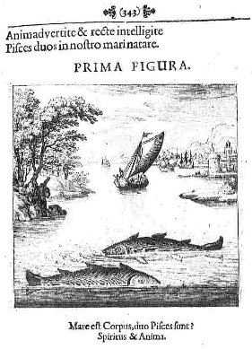
]] et anima . On n'y trouve aucune
concrétisation [une
cristallisation, une fixation du temps psychique]
telle qu'a pu
l'offrir la †
du Christ - logoV
comme Jung l'a fort bien vu. ]
lié de manière radicale à la Lune
[et
à l'animus ]
tandis qu'Osiris, rattaché au BIEN,
doit être
regardé comme le principe lumineux
qui brille dans le ciel et que l'on peut rattacher à l'anima
.
Voilà l'enseignement lapidaire, et quelque peu
manichéen, que l'on peut recueillir de mythographes comme
Charles Dupuis [Origine des religions,
tome IV].
Ce combat entre les deux natures primordiales [qui in fine se
résolvent dans
les figures classiques d'Aphrodite et d'Arès ]
procède des débordements que l'on observe entre
Éros et Psyché, pris comme archétypes
universels.
Cet aspect d'Éros, pris comme principe de liaison, est
illustré dans le RP
par les phases successives, quatre en
tout,
de la conjonction des principes [voir
Jung, Psychologie
du Transfert,
chap. II à V],
considéré comme
triplicité, non plus en tant que métal ou
minéral
mais en tant qu'esprit et, qui plus est, au spiritus sanctus
: en formation
[les
époux royaux encore revêtus de leurs habits],
une †
[les
fleurs entre-croisées]
et la lune [colombe
de Diane] où se
devine l'élément mercuriel
de liaison. Le symbole hermétique d'Éros peut
donc
correspondre à l'idéogramme suivant ou
lune mercurielle qui manifeste que « la
dissolution est la solution de la conjonction. »
De la séparation initiale de l'oeuf cosmique, issue de la
Nuit,
Éros se comporte comme de l'énergie pure dont la
nature
est essentiellement double, au sens où il manifeste un
avidité insatiable et une ruse
élémentaire qui le
conduit - de façon absolument dénuée
d'intermèdiaire - à s'inflitrer partout.
Éros est
non seulement dénué de scrupule mais, encore
plus,
dépourvu d'esprit ce qui lui assure une pureté
absolue.
Ce n'est que le contact avec Psyché qui va lui faire prendre
un
masque retors. Ce point semble entr'aperçu par Marie-Louise
von
Franz :]
et la passion amoureuse [anima ]...
Ou du moins qui ne trouve cette
séparation qu'avec sa résolution [passage à
l'acte qui correspond
à une dissolution du MOI dans le SOI au point que l'on peut
évoquer, parfois, un manque de discernement de la conscience
dans certaines affaires criminelles où l'ombre a
manifestement
morcelé la cohérence du MOI ou a envahi l'anima].
À ce problème de l'instinct auquel
n'échappe pas
l'humain vient s'en ajouter un second : la contingence liée
à l'opposé, c'est-à-dire à
ce
troisième acteur de la psyché dont on parle moins
que les
deux premiers : le ÇA,
qui recouvre tout ce qui
est du côté de l'altérité.
Les alchimistes
évoquent souvent dans leurs traités le
thème du
déluge et du renversement des pôles [qui lui est plus ou
moins lié]
et ils ont coutume, alors, d'insister sur le symbole de
Vénus
qui peut se lire [voir supra]
comme celui de la
stibine. Cette inversion est à l'image de celle dont Jung
nous
entretient dans Aïon
quand il traite de la présence immanente de l'animus chez
l'homme ou de l'anima chez la femme et ce thème est
récurrent d'une façon formelle dans son oeuvre.
Immanence
qui se trouve hypostasiée dans une autre des gravures du RP,
lorsque les époux
royaux, à présent dévêtus,
sont
plongés dans la fontaine de jouvence qui n'est point encore,
à ce résultant du combat du
dragon dévastateur Typhon [Tiamat
ou prima materia] et
d'Apsû [figure ploutonienne
:
de Ploutos qui
s'oppose au Pluton latin. PloutoV,
fils d'Iasion et de Déméter, dispense la richesse
et ne
doit pas être confondu avec Ploutwn,
dieu de
l'Hadès]. On a
examiné les rapports entre Tiamat
et d'autres dragons des temps anciens comme Rahab [voir supra ces
rapports recueillis par
A. Loizy] qui
apparaît
dans l'Ancien Testament
: et d'Arès .
Amour coupable sur lequel le filet d'Héphaistos
s'abat.
Le sel harmoniac des Sages est le seul, selon Fulcanelli,
qui soit capable d'instaurer la paix entre les opposés {
- }
; le seul qui puisse donner forme au Mercure
philosophique, c'est-à-dire à l'aqua permanens.
Cette
étape est
disposé en forme
d'eau permanente [allégorie
où les textes disent qu'il ne faut pas brûler les
fleurs].. En effet,
Apsû signifie « seigneur
de la Terre
» et en ce sens doit être
assimilé à la terre foliée que les
taureaux de
sont chargés de retourner afin de préparer la
semaille de
l'or enté. Le symbolisme d'Apsû est donc complexe
puisqu'on peut y trouver d'une part l'eau douce [qui chez les
Mésopotamiens
désigne le principe masculin]
et d'autre part
l'enveloppe terrestre formant ici comme la forêt qui
protège la prima materia.
Apsû est lié à Enki,
dénommé cerf de
l'Apsû et identifié à Ea. Il n'est pas
difficile
d'y voir des traits mercuriels. C'est dans cette optique, du reste,
qu'il faut lire la légende de cet Enki, le plus intelligent
des
dieux, qui devine qu'Apsû projette d'éliminer les
autres
dieux, exactement comme le fera beaucoup plus tard Cronos. Enki
s'approprie ensuite l'eau douce [Apsû],
ce qui
correspond à une sublimation. On remarque l'analogie entre
Apsû - Ouanos et Enki - Cronos . .
Anu [qui
règne sur les
cieux. Il est
assimilé à Ishtar, voir Aurora consurgens, III]
est paré de traits qui le font reconnaître comme spiritus rector,
et Ea est
par ailleurs apparenté au Christ [étant
symbolisé par le
poisson
et le chiffre 40]. Dans
cette mythologie, Ouranos est
figuré par Apsû - Tiamat [ce dernier
étant un monstre
rappelant Typhon] qui est
vaincu par Marduk : des restes de
cette divinité primordiale seront faits les cieux et la
terre.
Nous avons là un archétype constellé
où se
retrouve le thème du dragon, avec l'équivalence
Cadmus =
Marduk. En allant plus loin, il est encore possible de trouver avec les
dents du dragon que sème Cadmus un autre thème :
celui de
la conception circulaire où création et
destruction sont
incessants [kadmoï,
rappelant
aussi la survivance et le
pouvoir permanent, quoiqu'endormi, de Tiamat].
Notons que dans ce récit, Ea n'est pas à
proprement
parler une divinité primordiale puisqu'il est fils de la
profondeur des Eaux [manifestation
du Soi, animus , que l'on
retrouvera sous la forme
des Océanides, voir supra]
:
on l'appelle encore fontaine de sagesse, expression que les alchimistes
remploieront [voir RP,
fontaine du Bon Trévisan,
Fontaine des Amoureux de science de Jean de Meun, etc.].
Ce
dieu primordial, il faut aller le chercher dans le poème de la
création
[texte
mésopotamien datant
de - 1124] où il
est question d'Apsû, nom akkadien
désignant le monde des eaux souterraines , et par extension,
des
Enfers. On trouve dans la descendance d'Apsû - Tiamat
l'équivalent des Titans : ceux-ci se débarassent
rapidement d'Apsû [Eaux
douces] tandis que reste
Tiamat [Eaux
salées]
qui sera donc éliminé par Marduk. En
résumé, il semble possible de trouver
l'équivalent
d'Ouranos dans Tiamat, le monstre mésopotamien du chaos
antérieur : c'est une représentation de la prima materia
où l'on assiste à l'union du macrocosme et du
microcosme
: l'unus mundus.
Représentation gnostique essentielle dont Robert Fludd
réalisera une
synthèse magistrale dans son Utriusque Cosmi
[Oppenheim,
1617]. des
alchimistes ; l'autre féminine,
Tiamat, où nous retrouvons le principe salin salamandre]
qui toutes les deux représentent l'immense océan
comme
source de tous les êtres qui constituent l'univers. La
règle qui domine le panthéon babylonien, et
d'après laquelle un principe féminin doit
être
associé au principe masculin, une déesse
à un
dieu, se trouve ainsi appliquée au chaos, qui se
dédouble
en deux personnalités grandioses, l'Abîme et la
Mer,
l'Abîme ténébreux et insondable, la Mer
aux larges
entrailles, qui fourmillent d'êtres vivants. [même
chose
dans le
panthéon grec avec Ouranos et Gaiä]
L'un est le
père, et l'autre la mère de toutes choses.
Apsû et
Tiamat ne sont pas des dieux; ce sont plutôt de grands
monstres
que l'on sent vaguement dans les ténèbres
où le
chaos s'enveloppe, et que doit confondre l'apparition de la
lumière. Le personnage de Tiamat a beaucoup plus de relief
que
celui d'Apsû. Ce dernier ne jouera aucun rôle dans
la lutte
du chaos contre les dieux [le
soufre rouge, contrairement au Sel, n'est pas incombustible. Sous le
feu dissolvant, il se transforme promptement en ioV ]
; et même, avant d'engager le combat, Tiamat, qui seule en
soutiendra l'effort, se choisira un autre époux. Cependant
ni
Tiamat ni même Apsû ne sont des
créations purement
théologiques, et la place qui leur est assignée
dans
l'évolution universelle résulte plus ou moins des
conceptions de la mythologie populaire. L'idée que le monde
est
sorti de l'eau, idée qui atteint presque dans l'Enuma Elish
à la
consistance d'un système philosophique, provient des
impressions
ressenties par des hommes sans culture devant les
phénomènes naturels. Il ne semble pas cependant
que
l'inondation annuelle de la basse Chaldée par les eaux de
l'Euphrate ait suffi à la faire naître. Le
voisinage de la
mer a dû y contribuer tout autant, sinon davantage. L'eau du
fleuve qui se retire lentement en découvrant la terre et
laissant place à la végétation n'est
pas le
monstre terrible que peut seul dompter le dieu créateur.
C'est
bien plutôt le voisinage de la mer, de ses mouvements
tumultueux
et de ses tempêtes qui fait penser que la terre est conquise
sur
l'océan. La terre existe parce qu'un dieu a mis des
chaînes à la mer [Job,
XXXVIII, 8-11]. Non
seulement à chaque printemps, mais
chaque jour, grâce au soleil, elle paraît sortir
des
ténèbres et de l'eau menaçante.]
Une
génération spontanée s'est
substituée
à la génération par un couple
producteur. Cette
exégèse rationaliste laisse néanmoins
subsister
les monstres, sous la conduite de Tiamat, monstre comme eux. Lachmu et
Lachamu figurent donc en un seul couple ce monde bizarre [où
l'on voit
poindre l'idée de l'hermaphrodite, futur Rebis de la
tradition
hermétique], que
nous trouverons bientôt
organisé en armée contre les dieux anthromorphes
qui
introduisent l'ordre dans le monde. Lachmu est le nom de leur
espèce; Lachamu en est dérivé pour
l'équilibre du système, afin de pourvoir Lachmu
du
parèdre féminin qui lui est coordonné,
comme
Tiamat à Apsû, comme Kishar à Anshar [là
encore on ne peut manquer d'évoquer Apollon et
Artémis,
parèdre de Latone].
Selon Damascius, Anshar et
Kishar naissaient, après Lachmu et Lachamu, d'Apsû
et de
Tiamat. Notre poème manque de précision sur ce
point; il
ne dit pas que ces couples divins naquirent de tels ou tels parents,
mais simplement qu'ils furent produits. On a supposé que
l'indication était vague à dessein, pour
s'accorder avec
des traditions ou des conceptions diverses. Cette hypothèse
n'est peut-être pas nécessaire, attendu qu'il
s'agit d'une
matière essentiellement vague et de rapports qu'on
n'éprouvait sans doute pas le besoin de définir
exactement. Dans la suite du poème, Tiamat
apparaît comme
la mère de tous les êtres divins; les dieux de
l'ordre
sont fils d'Anshar, et Lachmu et Lachamu sont dits
leurs
ancêtres. Il est donc à croire que les
générations s'enchaînent,
Apsû et Tiamat
donnant le jour à Lachmu et Lachamu, lesquels produisent
Anshar
et Kishar, qui sont les parents des dieux de la triade
suprême,
Anu, Bel, Ea. Anshar ne paraît pas seulement dans le
préambule du poème ; il joue un rôle
important dans
l'histoire de la création. Son nom s'écrit comme
celui du
dieu national des Assyriens, le grand dieu Ashur, et
peut-être se
prononçait-il de la même manière.
Est-ce le
même dieu ? Rien ne s'y oppose, mais on ne saurait l'affirmer
avec certitude. S'il s'agissait d'Ashur, on pourrait croire
à
une combinaison voulue, pour faire place au dieu des Assyriens dans la
légende babylonienne, et, dans ce cas, la
rédaction
actuelle du poème, où se trahirait l'influence de
l'Assyrie, pourrait être de basse époque.
Cependant,
à en juger par l'économie de notre
récit, Anshar
n'y figurerait pas comme dieu des Assyriens, mais comme une
divinité fort ancienne du pays chaldéen,
à
laquelle, pour cette raison même, on assignerait une place
antérieure aux dieux de la triade suprême et
à
leurs enfants, c'est-à-dire aux grands dieux des temps plus
récents. Quoi qu'il en soit, Anshar, père et chef
des
dieux dans notre poème, est un dieu qui appartient
à
l'histoire, et il n'est pas un produit de la réflexion
théologique. Sa compagne Kishar ne se présente
pas dans
les mêmes conditions. Elle dérive d'Anshar, comme
Lachamu
de Lachmu, mais par un autre procédé.
L'écriture
idéographique du mot Anshar constitue un rébus
qui
signifie « tout le haut », c'est-à-dire
le monde
céleste ; Kishar est un autre rébus qui fait
pendant
à celui-ci, et qui signifie « tout le bas
» [voir Tabula
Smaragdina,
pseudo Hermès],
c'est-à-dire le monde terrestre. Ce couple divin figure donc
le
ciel et la terre à une époque où le
ciel et la
terre n'existaient pas encore ; ils sont comme un effort du chaos pour
se déterminer. Les Lachmi et Anshar sont d'anciennes
divinités qui ont plus ou moins perdu leur
clientèle, et
à qui, pour ne pas les oublier tout à fait, on
garde une
place dans la légende du monde antérieur
à celui
qui existe maintenant. Les Lachmi pourraient être un souvenir
atténué d'un temps où les dieux
avaient forme
animale. D'autre part, le procédé par lequel
Lachmu et
Lachamu, Anshar et Kishar sont donnés comme des
êtres
à moitié abstraits, des degrés
intermédiaires entre le chaos et le monde actuel,
gouverné par les dieux du panthéon babylonien, a
été développé dans des
textes probablement
plus récents, où l'on trouve jusqu'à
dix syzygies
analogues à celles que nous venons d'interpréter. ; Eana, le grand temple d'Erek,
signifie la maison du ciel ; et il est permis de penser que
le mot Apsû ne désigne pas directement
l'océan,
mais que c'est le nom du sanctuaire d'Eridu
, la ville d'Éa. Comment pourrait-on dire que
l'abîme-océan n'était pas fait ? Notre
texte, en
déclarant que les trois temples n'existaient pas encore,
donne
à penser qu'il n'y avait d'abord ni ciel, ni terre, ni
océan bien délimités. Ce symbolisme
est fort
ancien, quoique la forme qu'il revêt ici puisse
être
relativement récente. Mais ce qui est à noter,
c'est que
le chaos n'est pas personnifié, et nous verrons plus loin
qu'il
n'est pas censé préexister aux principaux dieux.
Cette
idée naïve et populaire de la création
est à
la base des récits bibliques. On connaît le
début
du récit jéhoviste [Gen.
ii, 46-6. Dans
ce récit, le nom de Dieu (Elohim) a
été adjoint au
nom de Iahvé par un rédacteur.]
:
fécondant la toyson de l'or alchimique ou résine
de l'or
- principe Sel .
Il
est
assez clair, toutefois, que les correspondances que nous
dégageons sont à la limite de l'aphorisme. Ce
serait sans
compter sur le symbolisme, essentiellement pléiomorphe,
évoqué dans les traités d'alchimie
où
dissolution et sublimation forment un entrelacs où les
stades ne
sont séparés que pour la simple
commodité du
discours]
; mais il est par lui-même tout autre
chose qu'Apsû ; il n'est pas l'abîme
ténébreux, il est une force divine qui
pénètre la matière chaotique et la
rend apte
à produire les êtres vivants [voir
le Mercure
philosophique des vieux
alchimistes comme Senior Zadith ou Artephius].
Ce n'est pas, néanmoins la théologie de l'auteur
qui a
suggéré cette addition. L'activité de
l'esprit est
sans résultats : c'est la parole toute-puissante de Dieu qui
appelle successivement tous les êtres à
l'existence ; le
rôle de l'esprit est superflu. D'où l'on peut
conclure que
cet élément est dû à une
tradition
particulière qui s'est mêlée
à la tradition
cosmogonique de Babylone. On admettrait volontiers ici une influence
égyptienne ou phénicienne, ou mieux encore une
influence
indirecte de l'Égypte par l'intermédiaire de la
Phénicie ou de la Syrie. Mais les cosmogonies
phéniciennes, où l'on trouve, en effet, mention
de
l'œuf du monde et d'un souffle
générateur [Cf.
Lenormant, Origines
de
L'histoire, I, 532-580;
Maspero, Histoire
ancienne des peuples de l'Orient,
I, 128, 155-157; II, 168; Holzinger, op.
cit., 4, 22.],
ne sont peut-être pas connues par des témoignages
suffisamment sûrs pour qu'il y ait lieu d'insister beaucoup
sur
ce rapprochement.
alchimique par le Lion vert ? C'est-à-dire du
sulphur en .
Hathor a d'ailleurs fort à voir avec l'Aphrodite qui gouverne la Balance [voir zodiaque
alchimique]
en association avec la Lune
prise en son premier quartier, quand Rê vient à
disparaître [cf. Atalanta XXXVIII].
Elle
représente la maison d'Horus et, en ce sens, le creuset des
alchimistes ou la †
du Christ [le symbolisme est
superposable car Hathor joue le rôle du psychopompe]
: en
effet, Rê est blessé par un serpent que forme Isis
[analogue
de Junon - Hera;
référence à Python - Typhon]
et qui
l'oblige à se coucher sur le dos de la déesse
à
tête de vache. Celle-ci prend en elle, à
l'équinoxe d'automne, le sperme [le sulphur ]
qui engendrera Horus [considéré
comme lapis].
Dans cette légende, il y a lieu d'ailleurs de rectifier
l'idéogramme d'Aphrodite - associé à
la Balance -
pour, en le retournant [ce qui
semble possible si l'on tient compte que la tradition voit en la
Balance un signe masculin],
former le symbole chthonien de la
stibine
associé à la
surrection de Délos émergeant de
l'océan
typhonien. L'oeil de lune de Hathor se transforme alors en
iris qui prend les couleurs de la queue du paon [animal
dédié à Hera],
avant de se transformer en anima
consurgens
qui annonce le renouveau
du jour [voir Aurora consurgens, I].
, via Belenos, à Apollon :
est
disposé en forme
d'eau permanente [allégorie
où les textes disent qu'il ne faut pas brûler les
fleurs].. En effet,
Apsû signifie « seigneur
de la Terre
» et en ce sens doit être
assimilé à la terre foliée que les
taureaux de
sont chargés de retourner afin de préparer la
semaille de
l'or enté. Le symbolisme d'Apsû est donc complexe
puisqu'on peut y trouver d'une part l'eau douce [qui chez les
Mésopotamiens
désigne le principe masculin]
et d'autre part
l'enveloppe terrestre formant ici comme la forêt qui
protège la prima materia.
Apsû est lié à Enki,
dénommé cerf de
l'Apsû et identifié à Ea. Il n'est pas
difficile
d'y voir des traits mercuriels. C'est dans cette optique, du reste,
qu'il faut lire la légende de cet Enki, le plus intelligent
des
dieux, qui devine qu'Apsû projette d'éliminer les
autres
dieux, exactement comme le fera beaucoup plus tard Cronos. Enki
s'approprie ensuite l'eau douce [Apsû],
ce qui
correspond à une sublimation. On remarque l'analogie entre
Apsû - Ouanos et Enki - Cronos . .
Anu [qui
règne sur les
cieux. Il est
assimilé à Ishtar, voir Aurora consurgens, III]
est paré de traits qui le font reconnaître comme spiritus rector,
et Ea est
par ailleurs apparenté au Christ [étant
symbolisé par le
poisson
et le chiffre 40]. Dans
cette mythologie, Ouranos est
figuré par Apsû - Tiamat [ce dernier
étant un monstre
rappelant Typhon] qui est
vaincu par Marduk : des restes de
cette divinité primordiale seront faits les cieux et la
terre.
Nous avons là un archétype constellé
où se
retrouve le thème du dragon, avec l'équivalence
Cadmus =
Marduk. En allant plus loin, il est encore possible de trouver avec les
dents du dragon que sème Cadmus un autre thème :
celui de
la conception circulaire où création et
destruction sont
incessants [kadmoï,
rappelant
aussi la survivance et le
pouvoir permanent, quoiqu'endormi, de Tiamat].
Notons que dans ce récit, Ea n'est pas à
proprement
parler une divinité primordiale puisqu'il est fils de la
profondeur des Eaux [manifestation
du Soi, animus , que l'on
retrouvera sous la forme
des Océanides, voir supra]
:
on l'appelle encore fontaine de sagesse, expression que les alchimistes
remploieront [voir RP,
fontaine du Bon Trévisan,
Fontaine des Amoureux de science de Jean de Meun, etc.].
Ce
dieu primordial, il faut aller le chercher dans le poème de la
création
[texte
mésopotamien datant
de - 1124] où il
est question d'Apsû, nom akkadien
désignant le monde des eaux souterraines , et par extension,
des
Enfers. On trouve dans la descendance d'Apsû - Tiamat
l'équivalent des Titans : ceux-ci se débarassent
rapidement d'Apsû [Eaux
douces] tandis que reste
Tiamat [Eaux
salées]
qui sera donc éliminé par Marduk. En
résumé, il semble possible de trouver
l'équivalent
d'Ouranos dans Tiamat, le monstre mésopotamien du chaos
antérieur : c'est une représentation de la prima materia
où l'on assiste à l'union du macrocosme et du
microcosme
: l'unus mundus.
Représentation gnostique essentielle dont Robert Fludd
réalisera une
synthèse magistrale dans son Utriusque Cosmi
[Oppenheim,
1617]. des
alchimistes ; l'autre féminine,
Tiamat, où nous retrouvons le principe salin salamandre]
qui toutes les deux représentent l'immense océan
comme
source de tous les êtres qui constituent l'univers. La
règle qui domine le panthéon babylonien, et
d'après laquelle un principe féminin doit
être
associé au principe masculin, une déesse
à un
dieu, se trouve ainsi appliquée au chaos, qui se
dédouble
en deux personnalités grandioses, l'Abîme et la
Mer,
l'Abîme ténébreux et insondable, la Mer
aux larges
entrailles, qui fourmillent d'êtres vivants. [même
chose
dans le
panthéon grec avec Ouranos et Gaiä]
L'un est le
père, et l'autre la mère de toutes choses.
Apsû et
Tiamat ne sont pas des dieux; ce sont plutôt de grands
monstres
que l'on sent vaguement dans les ténèbres
où le
chaos s'enveloppe, et que doit confondre l'apparition de la
lumière. Le personnage de Tiamat a beaucoup plus de relief
que
celui d'Apsû. Ce dernier ne jouera aucun rôle dans
la lutte
du chaos contre les dieux [le
soufre rouge, contrairement au Sel, n'est pas incombustible. Sous le
feu dissolvant, il se transforme promptement en ioV ]
; et même, avant d'engager le combat, Tiamat, qui seule en
soutiendra l'effort, se choisira un autre époux. Cependant
ni
Tiamat ni même Apsû ne sont des
créations purement
théologiques, et la place qui leur est assignée
dans
l'évolution universelle résulte plus ou moins des
conceptions de la mythologie populaire. L'idée que le monde
est
sorti de l'eau, idée qui atteint presque dans l'Enuma Elish
à la
consistance d'un système philosophique, provient des
impressions
ressenties par des hommes sans culture devant les
phénomènes naturels. Il ne semble pas cependant
que
l'inondation annuelle de la basse Chaldée par les eaux de
l'Euphrate ait suffi à la faire naître. Le
voisinage de la
mer a dû y contribuer tout autant, sinon davantage. L'eau du
fleuve qui se retire lentement en découvrant la terre et
laissant place à la végétation n'est
pas le
monstre terrible que peut seul dompter le dieu créateur.
C'est
bien plutôt le voisinage de la mer, de ses mouvements
tumultueux
et de ses tempêtes qui fait penser que la terre est conquise
sur
l'océan. La terre existe parce qu'un dieu a mis des
chaînes à la mer [Job,
XXXVIII, 8-11]. Non
seulement à chaque printemps, mais
chaque jour, grâce au soleil, elle paraît sortir
des
ténèbres et de l'eau menaçante.]
Une
génération spontanée s'est
substituée
à la génération par un couple
producteur. Cette
exégèse rationaliste laisse néanmoins
subsister
les monstres, sous la conduite de Tiamat, monstre comme eux. Lachmu et
Lachamu figurent donc en un seul couple ce monde bizarre [où
l'on voit
poindre l'idée de l'hermaphrodite, futur Rebis de la
tradition
hermétique], que
nous trouverons bientôt
organisé en armée contre les dieux anthromorphes
qui
introduisent l'ordre dans le monde. Lachmu est le nom de leur
espèce; Lachamu en est dérivé pour
l'équilibre du système, afin de pourvoir Lachmu
du
parèdre féminin qui lui est coordonné,
comme
Tiamat à Apsû, comme Kishar à Anshar [là
encore on ne peut manquer d'évoquer Apollon et
Artémis,
parèdre de Latone].
Selon Damascius, Anshar et
Kishar naissaient, après Lachmu et Lachamu, d'Apsû
et de
Tiamat. Notre poème manque de précision sur ce
point; il
ne dit pas que ces couples divins naquirent de tels ou tels parents,
mais simplement qu'ils furent produits. On a supposé que
l'indication était vague à dessein, pour
s'accorder avec
des traditions ou des conceptions diverses. Cette hypothèse
n'est peut-être pas nécessaire, attendu qu'il
s'agit d'une
matière essentiellement vague et de rapports qu'on
n'éprouvait sans doute pas le besoin de définir
exactement. Dans la suite du poème, Tiamat
apparaît comme
la mère de tous les êtres divins; les dieux de
l'ordre
sont fils d'Anshar, et Lachmu et Lachamu sont dits
leurs
ancêtres. Il est donc à croire que les
générations s'enchaînent,
Apsû et Tiamat
donnant le jour à Lachmu et Lachamu, lesquels produisent
Anshar
et Kishar, qui sont les parents des dieux de la triade
suprême,
Anu, Bel, Ea. Anshar ne paraît pas seulement dans le
préambule du poème ; il joue un rôle
important dans
l'histoire de la création. Son nom s'écrit comme
celui du
dieu national des Assyriens, le grand dieu Ashur, et
peut-être se
prononçait-il de la même manière.
Est-ce le
même dieu ? Rien ne s'y oppose, mais on ne saurait l'affirmer
avec certitude. S'il s'agissait d'Ashur, on pourrait croire
à
une combinaison voulue, pour faire place au dieu des Assyriens dans la
légende babylonienne, et, dans ce cas, la
rédaction
actuelle du poème, où se trahirait l'influence de
l'Assyrie, pourrait être de basse époque.
Cependant,
à en juger par l'économie de notre
récit, Anshar
n'y figurerait pas comme dieu des Assyriens, mais comme une
divinité fort ancienne du pays chaldéen,
à
laquelle, pour cette raison même, on assignerait une place
antérieure aux dieux de la triade suprême et
à
leurs enfants, c'est-à-dire aux grands dieux des temps plus
récents. Quoi qu'il en soit, Anshar, père et chef
des
dieux dans notre poème, est un dieu qui appartient
à
l'histoire, et il n'est pas un produit de la réflexion
théologique. Sa compagne Kishar ne se présente
pas dans
les mêmes conditions. Elle dérive d'Anshar, comme
Lachamu
de Lachmu, mais par un autre procédé.
L'écriture
idéographique du mot Anshar constitue un rébus
qui
signifie « tout le haut », c'est-à-dire
le monde
céleste ; Kishar est un autre rébus qui fait
pendant
à celui-ci, et qui signifie « tout le bas
» [voir Tabula
Smaragdina,
pseudo Hermès],
c'est-à-dire le monde terrestre. Ce couple divin figure donc
le
ciel et la terre à une époque où le
ciel et la
terre n'existaient pas encore ; ils sont comme un effort du chaos pour
se déterminer. Les Lachmi et Anshar sont d'anciennes
divinités qui ont plus ou moins perdu leur
clientèle, et
à qui, pour ne pas les oublier tout à fait, on
garde une
place dans la légende du monde antérieur
à celui
qui existe maintenant. Les Lachmi pourraient être un souvenir
atténué d'un temps où les dieux
avaient forme
animale. D'autre part, le procédé par lequel
Lachmu et
Lachamu, Anshar et Kishar sont donnés comme des
êtres
à moitié abstraits, des degrés
intermédiaires entre le chaos et le monde actuel,
gouverné par les dieux du panthéon babylonien, a
été développé dans des
textes probablement
plus récents, où l'on trouve jusqu'à
dix syzygies
analogues à celles que nous venons d'interpréter. ; Eana, le grand temple d'Erek,
signifie la maison du ciel ; et il est permis de penser que
le mot Apsû ne désigne pas directement
l'océan,
mais que c'est le nom du sanctuaire d'Eridu
, la ville d'Éa. Comment pourrait-on dire que
l'abîme-océan n'était pas fait ? Notre
texte, en
déclarant que les trois temples n'existaient pas encore,
donne
à penser qu'il n'y avait d'abord ni ciel, ni terre, ni
océan bien délimités. Ce symbolisme
est fort
ancien, quoique la forme qu'il revêt ici puisse
être
relativement récente. Mais ce qui est à noter,
c'est que
le chaos n'est pas personnifié, et nous verrons plus loin
qu'il
n'est pas censé préexister aux principaux dieux.
Cette
idée naïve et populaire de la création
est à
la base des récits bibliques. On connaît le
début
du récit jéhoviste [Gen.
ii, 46-6. Dans
ce récit, le nom de Dieu (Elohim) a
été adjoint au
nom de Iahvé par un rédacteur.]
:
fécondant la toyson de l'or alchimique ou résine
de l'or
- principe Sel .
Il
est
assez clair, toutefois, que les correspondances que nous
dégageons sont à la limite de l'aphorisme. Ce
serait sans
compter sur le symbolisme, essentiellement pléiomorphe,
évoqué dans les traités d'alchimie
où
dissolution et sublimation forment un entrelacs où les
stades ne
sont séparés que pour la simple
commodité du
discours]
; mais il est par lui-même tout autre
chose qu'Apsû ; il n'est pas l'abîme
ténébreux, il est une force divine qui
pénètre la matière chaotique et la
rend apte
à produire les êtres vivants [voir
le Mercure
philosophique des vieux
alchimistes comme Senior Zadith ou Artephius].
Ce n'est pas, néanmoins la théologie de l'auteur
qui a
suggéré cette addition. L'activité de
l'esprit est
sans résultats : c'est la parole toute-puissante de Dieu qui
appelle successivement tous les êtres à
l'existence ; le
rôle de l'esprit est superflu. D'où l'on peut
conclure que
cet élément est dû à une
tradition
particulière qui s'est mêlée
à la tradition
cosmogonique de Babylone. On admettrait volontiers ici une influence
égyptienne ou phénicienne, ou mieux encore une
influence
indirecte de l'Égypte par l'intermédiaire de la
Phénicie ou de la Syrie. Mais les cosmogonies
phéniciennes, où l'on trouve, en effet, mention
de
l'œuf du monde et d'un souffle
générateur [Cf.
Lenormant, Origines
de
L'histoire, I, 532-580;
Maspero, Histoire
ancienne des peuples de l'Orient,
I, 128, 155-157; II, 168; Holzinger, op.
cit., 4, 22.],
ne sont peut-être pas connues par des témoignages
suffisamment sûrs pour qu'il y ait lieu d'insister beaucoup
sur
ce rapprochement.
alchimique par le Lion vert ? C'est-à-dire du
sulphur en .
Hathor a d'ailleurs fort à voir avec l'Aphrodite qui gouverne la Balance [voir zodiaque
alchimique]
en association avec la Lune
prise en son premier quartier, quand Rê vient à
disparaître [cf. Atalanta XXXVIII].
Elle
représente la maison d'Horus et, en ce sens, le creuset des
alchimistes ou la †
du Christ [le symbolisme est
superposable car Hathor joue le rôle du psychopompe]
: en
effet, Rê est blessé par un serpent que forme Isis
[analogue
de Junon - Hera;
référence à Python - Typhon]
et qui
l'oblige à se coucher sur le dos de la déesse
à
tête de vache. Celle-ci prend en elle, à
l'équinoxe d'automne, le sperme [le sulphur ]
qui engendrera Horus [considéré
comme lapis].
Dans cette légende, il y a lieu d'ailleurs de rectifier
l'idéogramme d'Aphrodite - associé à
la Balance -
pour, en le retournant [ce qui
semble possible si l'on tient compte que la tradition voit en la
Balance un signe masculin],
former le symbole chthonien de la
stibine
associé à la
surrection de Délos émergeant de
l'océan
typhonien. L'oeil de lune de Hathor se transforme alors en
iris qui prend les couleurs de la queue du paon [animal
dédié à Hera],
avant de se transformer en anima
consurgens
qui annonce le renouveau
du jour [voir Aurora consurgens, I].
, via Belenos, à Apollon :